<!doctype html>
<html lang="en">
<head>
  <meta charset="utf-8">
  <meta name="viewport" content="width=device-width, initial-scale=1">
  <title>arxiv digest — 2026-10-28</title>
  <style>
:root {
  --bg: #ffffff;
  --fg: #1f2328;
  --muted: #59636e;
  --border: #d0d7de;
  --card: #f6f8fa;
  --link: #0969da;
}
body {
  max-width: 980px;
  margin: 0 auto;
  padding: 2rem 1rem 5rem;
  font-family: -apple-system, BlinkMacSystemFont, "Segoe UI", Helvetica, Arial, sans-serif;
  line-height: 1.55;
  color: var(--fg);
  background: var(--bg);
}
a { color: var(--link); }
img { max-width: 100%; height: auto; }
pre, code { background: var(--card); border-radius: 6px; }
pre { padding: 1rem; overflow-x: auto; }
blockquote { border-left: 4px solid var(--border); padding-left: 1rem; color: var(--muted); }
details { margin: 0.6rem 0; }
summary { cursor: pointer; font-weight: 600; }
.paper-figures-scroll {
  display: flex;
  gap: 1rem;
  overflow-x: auto;
  overscroll-behavior-x: contain;
  padding: 0.75rem 0.25rem 1rem;
  margin: 1rem 0 1.25rem;
  border-top: 1px solid var(--border);
  border-bottom: 1px solid var(--border);
  scroll-snap-type: x proximity;
}
.paper-figure-card {
  flex: 0 0 min(260px, 72vw);
  scroll-snap-align: start;
  background: var(--card);
  border: 1px solid var(--border);
  border-radius: 12px;
  padding: 0.55rem;
}
.paper-figure-card img {
  display: block;
  width: 100%;
  max-height: 240px;
  object-fit: contain;
  background: white;
  border-radius: 8px;
}
.paper-figure-caption {
  display: block;
  margin-top: 0.5rem;
  color: var(--muted);
  font-size: 0.85rem;
}
.figure-strip-hint {
  color: var(--muted);
  font-size: 0.9rem;
  margin-bottom: -0.3rem;
}
</style>
  <script>
    window.MathJax = {
      tex: {
        inlineMath: [['$', '$'], ['\\(', '\\)']],
        displayMath: [['$$', '$$'], ['\\[', '\\]']],
        processEscapes: true,
        processEnvironments: true
      },
      options: {
        skipHtmlTags: ['script', 'noscript', 'style', 'textarea', 'pre', 'code'],
        ignoreHtmlClass: 'tex2jax_ignore',
        processHtmlClass: 'tex2jax_process'
      }
    };
  </script>
  <script id="MathJax-script" async
    src="https://cdn.jsdelivr.net/npm/mathjax@3/es5/tex-chtml.js"></script>
</head>
<body>
<header style="background-color: #333; color: white; padding: 15px; margin-bottom: 20px;">
  <h1 style="margin: 0; font-size: 24px;">
    <a href="https://ochelpan.github.io/arXiv_clean/" style="color: white; text-decoration: none;">Main</a>
  </h1>
</header>

<h1>Daily arXiv Report</h1>

<hr>
<p>
<a href="index.html">← Index</a>
 · <a href="papers_09.html">← Previous</a> · <a href="papers_11.html">Next →</a>
</p>
<hr>

<h2>Papers 181–200</h2>
<p><a id="paper-2610.33211"></a></p>
<h3 id="orbital-hall-response-of-spin-1-fermions-with-a-curved-central-band"><a href="http://arxiv.org/abs/2610.33211v1">Orbital Hall response of spin-1 fermions with a curved central band</a></h3>
<p><strong>Authors:</strong> J. H. Warnes, Dayana Joy, Pankaj Bhalla, Rhonald Burgos Atencia<br>
<strong>Type:</strong> theory · <strong>Category:</strong> other · <strong>PDF:</strong> <a href="https://arxiv.org/pdf/2610.33211v1">https://arxiv.org/pdf/2610.33211v1</a><br>
<strong>Analysis basis:</strong> full PDF text, analyzed in chunks
<strong>Topic relevance:</strong> <code>Keldysh / 2PI / non-Gaussian methods</code> <strong>2/5</strong> · <code>methods for driven-dissipative</code> <strong>2/5</strong> · <code>analog quantum simulation</code> <strong>1/5</strong> · <code>quantum measurements</code> <strong>1/5</strong></p>
<div class="figure-strip-hint">↔ Scroll figures horizontally</div>
<div class="paper-figures-scroll">
<figure class="paper-figure-card">
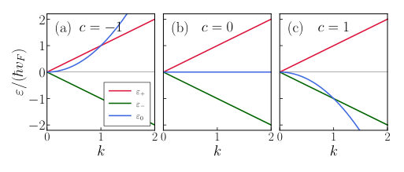
<figcaption class="paper-figure-caption"><b>Fig 1.</b> FIG. 1. Electronic band structure for (a) c &lt; 0, (b) c = 0, and (c) c &gt; 0. The linear bands ε± = ±ℏvF k are independent of c, while the central band ε0 = −ck2 is upward-opening, flat, or downward-opening, respectively. The panels correspond to c = −1, 0, and 1, with ℏ= vF = 1.</figcaption>
</figure>
<figure class="paper-figure-card">
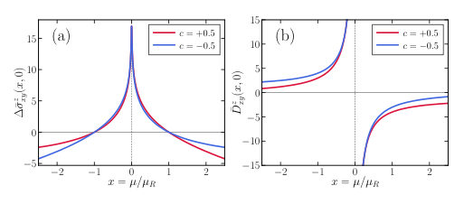
<figcaption class="paper-figure-caption"><b>Fig 2.</b> FIG. 2. Dimensionless Hall response and differential at T = 0 as functions of x = µ/µR for c &gt; 0 and c &lt; 0. The responses are independent of |c| and depend only on sgn(c).</figcaption>
</figure>
<figure class="paper-figure-card">
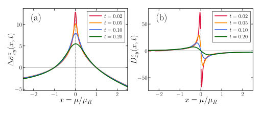
<figcaption class="paper-figure-caption"><b>Fig 3.</b> FIG. 3. Dimensionless Hall response at finite temperature for c = +0.5. (a) Reference-subtracted Hall response ∆¯σz xy(x, t); (b) differential Hall response ¯Dz xy(x, t), for t = 0.02, 0.05, 0.10, and 0.20, with x = µ/µR.</figcaption>
</figure>
<figure class="paper-figure-card">
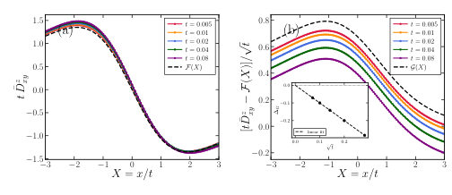
<figcaption class="paper-figure-caption"><b>Fig 4.</b> FIG. 4. Asymptotic scaling of the differential Hall response for |x| ∼t ≪1. (a) t ¯Dz xy versus X = x/t and the leading scaling function F(X). (b) (t ¯Dz xy −F)/ √</figcaption>
</figure>
</div>

<p><strong>Summary.</strong> This work theoretically calculates the orbital Hall effect in a spin-1 fermion model featuring a curved central band. By employing a quantum kinetic approach, the authors show that the OHE is fundamentally linked to the geometry of the electronic bands and interband transitions. This provides a simple, yet powerful, framework for studying orbital transport beyond simple two-band models.</p>
<p><strong>Why it may be interesting.</strong> While focused on condensed matter transport, the use of quantum kinetic theory and the explicit calculation of Berry-connection derived responses provide rigorous methods applicable to open quantum systems dynamics.</p>
<details>
<summary>Detailed structure</summary>
<p><strong>Main problem.</strong> The paper investigates the orbital Hall effect (OHE) in a spin-1 fermion system to understand the microscopic and geometrical origins of orbital currents in multiband electronic systems.</p>
<p><strong>Main result.</strong> The orbital Hall conductivity arises from the interplay between the momentum-dependent orbital character of the eigenstates and interband transitions, establishing a link between the multiband quantum geometry and the transverse orbital response.</p>
<p><strong>Method.</strong> The intrinsic OHE is derived using a quantum kinetic approach, analyzing the response via interband coherence induced by an external electric field.</p>
<p><strong>Model / system.</strong> The system is a spin-1 fermion model described by a low-energy Hamiltonian containing linear and quadratic momentum-dependent terms, leading to a spectrum with two linear bands and a curved central band.</p>
<p><strong>Key observables.</strong> Orbital Hall conductivity ($\sigma_{xy}^{OHE}$) and the differential orbital Hall response.</p>
<p><strong>Important parameters / regimes.</strong> The curvature parameter $c$ controlling the central band, and momentum scales related to the Fermi level ($\mu$).</p>
<p><strong>Assumptions / limitations.</strong> The analysis assumes a uniform and time-independent external electric field $\mathbf{E}_0$.</p>
<p><strong>Figures summary.</strong> Figure 1 illustrates the band structure evolution for different signs of the curvature parameter $c$, showing band crossings at $k=0$ or finite momentum $k_c$.</p>
<p><strong>Paper structure.</strong> The paper develops the theory by first defining the Hamiltonian and band structure, then applying the quantum kinetic approach to derive the intrinsic conductivity formula, and finally calculating the quadratic contribution ($\sigma_Q$) separately.</p>
</details>
<details>
<summary>Abstract</summary>
<p>We investigate the orbital Hall effect in a three-band system described by a low-energy Hamiltonian containing both linear and quadratic momentum-dependent contributions. The linear term lifts the degeneracy between the dispersive bands, providing a minimal setting to study orbital transport in a multiband system with a curved central band. Within a quantum kinetic approach, we derive the intrinsic orbital Hall response and analyze its microscopic origin in terms of interband coherence induced by an external electric field. We show that the orbital Hall conductivity arises from the interplay between the momentum-dependent orbital character of the eigenstates and transitions between different bands. The spin-1 structure provides a particularly transparent platform in which the contributions associated with different interband channels can be identified separately. We further show that the differential orbital Hall response provides a direct probe of the low-energy structure, exhibiting distinct scaling singularities associated with the linear and quadratic bands, respectively, while remaining independent of the ultraviolet cutoff. Our results establish a connection between the multiband quantum geometry of spin-1 fermions and their transverse orbital response, and provide a simple framework for investigating orbital transport beyond two-band models.</p>
</details>
<p><sub><a href="#top">↑ back to top</a></sub></p>

<p><a id="paper-2610.35238"></a></p>
<h3 id="flexural-altermagnetism"><a href="http://arxiv.org/abs/2610.35238v1">Flexural Altermagnetism</a></h3>
<p><strong>Authors:</strong> Songbo Li, Jinxiong Jia, Zeyu Li, Xudong Zhu, Jiaqi An, Feitong Chu, Songbo Zhang, Wenguang Zhu, Hualing Zeng, Zhenhua Qiao<br>
<strong>Type:</strong> theory · <strong>Category:</strong> other · <strong>PDF:</strong> <a href="https://arxiv.org/pdf/2610.35238v1">https://arxiv.org/pdf/2610.35238v1</a><br>
<strong>Analysis basis:</strong> full PDF text, analyzed in chunks
<strong>Topic relevance:</strong> <code>analog quantum simulation</code> <strong>2/5</strong> · <code>Keldysh / 2PI / non-Gaussian methods</code> <strong>1/5</strong> · <code>quantum measurements</code> <strong>1/5</strong></p>
<div class="figure-strip-hint">↔ Scroll figures horizontally</div>
<div class="paper-figures-scroll">
<figure class="paper-figure-card">
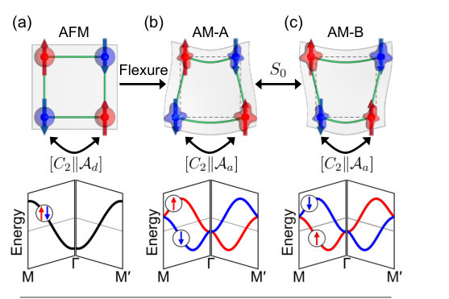
<figcaption class="paper-figure-caption"><b>Fig 1.</b> FIG. 1. Flexural altermagnetism and spin-splitting rever- sal. (a) Spin-degenerate antiferromagnet (AFM) state. (b) and (c) Two symmetry-related flexural altermagnet (AM) configurations with reversed spin splitting. The upper and lower panels show the real-space spin configurations and spin- resolved bands, respectively. Red and blue denote opposite spins. The spin–space operation S0 transforms AM-A into AM-B, reversing the spin splitting. The table lists representa- tive spin-exchanging spatial operations of two types, Ad and Aa, distinguished by their action on the in-plane momentum.</figcaption>
</figure>
<figure class="paper-figure-card">
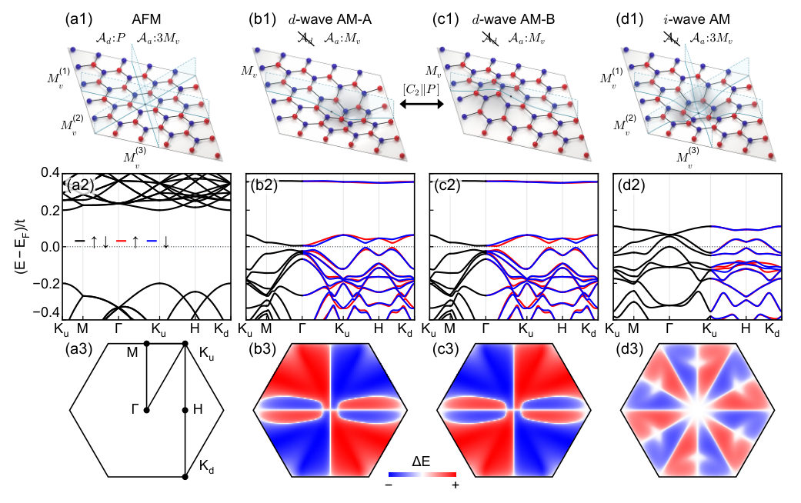
<figcaption class="paper-figure-caption"><b>Fig 2.</b> FIG. 2. Tight-binding model realization of flexural altermagnetism and spin-splitting reversal. (a1)–(d1) Lattice configurations of the flat AFM, d-wave AM-A, d-wave AM-B, and i-wave AM, respectively. (a2)–(d2) Corresponding spin-resolved band structures. Red and blue denote spin-up and spin-down bands, respectively. (a3)–(d3) Momentum-resolved spin splitting of the 25th band, ∆E(k) = E↑(k) −E↓(k). The splitting vanishes for the flat AFM, and (a3) also indicates the Brillouin zone and high-symmetry momentum path.</figcaption>
</figure>
<figure class="paper-figure-card">
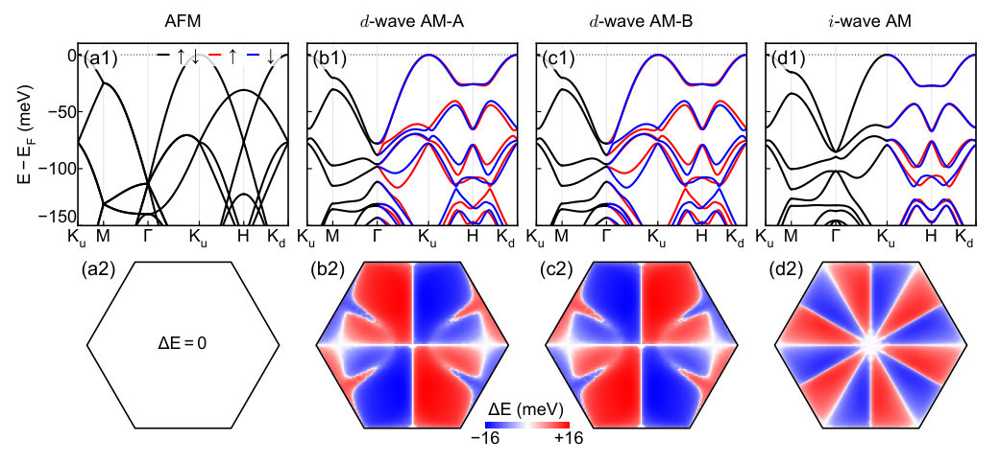
<figcaption class="paper-figure-caption"><b>Fig 3.</b> FIG. 3. First-principles realization of flexural altermagnetism and spin-splitting reversal in monolayer MnPS3. (a1)–(d1) Spin-resolved band structures of the flat AFM, d-wave AM-A, d-wave AM-B, and i-wave AM, respectively. Red and blue denote spin-up and spin-down bands, respectively. (a2)–(d2) Corresponding momentum-resolved spin splitting of the fourth-highest occupied band, ∆E(k) = E↑(k) −E↓(k).</figcaption>
</figure>
<figure class="paper-figure-card">
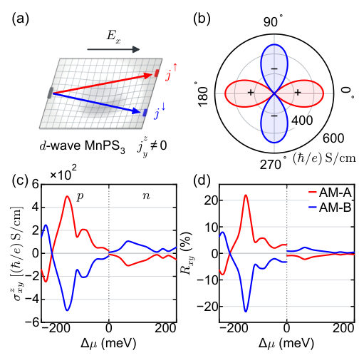
<figcaption class="paper-figure-caption"><b>Fig 4.</b> FIG. 4. Flexure-controlled spin-current response in mono- layer MnPS3. (a) Schematic of the nonrelativistic spin-splitter effect in the d-wave AM, where an in-plane electric field Ex generates opposite transverse spin-channel currents. (b) An- gular dependence of the transverse spin conductivity σz ⊥at ∆µp = −125 meV. Red and blue indicate positive and negative responses, respectively. (c) Transverse spin conductivity σz xy and (d) spin-splitter ratio Rxy as functions of the chemical- potential shift ∆µ for AM-A (red) and AM-B (blue). Negative (positive) ∆µ corresponds to p-type (n-type) doping.</figcaption>
</figure>
</div>

<p><strong>Summary.</strong> This work demonstrates that mechanical bending (flexure) can be used as a powerful tool to engineer altermagnetic states in 2D antiferromagnets like MnPS3. By controlling the lattice curvature, the researchers can selectively break symmetries to achieve different spin-splitting patterns and even reverse the spin-splitting sign, enabling mechanical control over spin-current properties.</p>
<p><strong>Why it may be interesting.</strong> While focused on condensed matter magnetism, the concept of using mechanical strain (flexure) to tune electronic and magnetic properties is highly relevant to open quantum systems and spintronics, offering a pathway for reconfigurable quantum devices.</p>
<details>
<summary>Detailed structure</summary>
<p><strong>Main problem.</strong> The paper establishes flexural deformation as a versatile, mechanical route to engineer and control altermagnetism in two-dimensional collinear antiferromagnets.</p>
<p><strong>Main result.</strong> By tailoring the flexure, the authors demonstrate the realization of distinct altermagnetic states (d-wave and i-wave) and show that the spin splitting can be reversibly switched by changing the symmetry-related flexural configuration.</p>
<p><strong>Method.</strong> The study employs a combination of theoretical modeling, using a tight-binding model built on a honeycomb supercell, and validating concepts with first-principles DFT calculations.</p>
<p><strong>Model / system.</strong> The physical system is monolayer MnPS3, modeled as a 2D collinear antiferromagnet. The theoretical framework utilizes spin-layer-group symmetry analysis and incorporates mechanical strain via out-of-plane height and in-plane displacement fields.</p>
<p><strong>Key observables.</strong> Momentum-dependent spin splitting ($\Delta E(\mathbf{k})$), transverse spin-splitter response ($\sigma_{z\perp}$ and $R_{xy}$), and the wave symmetry (d-wave, i-wave) of the resulting altermagnetic state.</p>
<p><strong>Important parameters / regimes.</strong> The degree and type of flexural deformation, which selectively breaks specific symmetries of the lattice.</p>
<p><strong>Assumptions / limitations.</strong> The analysis relies on the tight-binding model approximation and the use of DFT/Hubbard-U for electronic structure calculations, along with the relaxation-time approximation for transport properties.</p>
<p><strong>Figures summary.</strong> Figures illustrate the mechanism of flexural AM, showing lattice configurations for different states (AM-A, AM-B, i-wave) and corresponding spin-resolved band structures and momentum-resolved spin splitting patterns.</p>
<p><strong>Paper structure.</strong> The paper progresses by first introducing the concept of AM via symmetry breaking, then detailing the theoretical model using flexural deformation, presenting results for d-wave and i-wave states in MnPS3, and finally demonstrating the switchable transverse spin-current response.</p>
</details>
<details>
<summary>Abstract</summary>
<p>We establish flexural deformation as a versatile route for engineering altermagnetism in two-dimensional collinear antiferromagnets. By tailoring the flexure, we selectively break different symmetries to realize altermagnetic states with distinct wave symmetries and reverse their spin splitting. A tight-binding model and first-principles calculations for monolayer MnPS3 demonstrate d- and i-wave states and a switchable transverse spin current in the d-wave state.</p>
</details>
<p><sub><a href="#top">↑ back to top</a></sub></p>

<p><a id="paper-2610.35662"></a></p>
<h3 id="phonon-assisted-shift-current-from-first-principles-application-to-aln-monolayer"><a href="http://arxiv.org/abs/2610.35662v1">Phonon-assisted shift-current from first-principles: application to AlN monolayer</a></h3>
<p><strong>Authors:</strong> Yuncheng Mao, Pierre Lechifflart, Elena Cannuccia, Claudio Attaccalite<br>
<strong>Type:</strong> theory · <strong>Category:</strong> other · <strong>PDF:</strong> <a href="https://arxiv.org/pdf/2610.35662v1">https://arxiv.org/pdf/2610.35662v1</a><br>
<strong>Analysis basis:</strong> full PDF text, analyzed in chunks
<strong>Topic relevance:</strong> <code>Keldysh / 2PI / non-Gaussian methods</code> <strong>2/5</strong> · <code>methods for driven-dissipative</code> <strong>2/5</strong></p>
<div class="figure-strip-hint">↔ Scroll figures horizontally</div>
<div class="paper-figures-scroll">
<figure class="paper-figure-card">
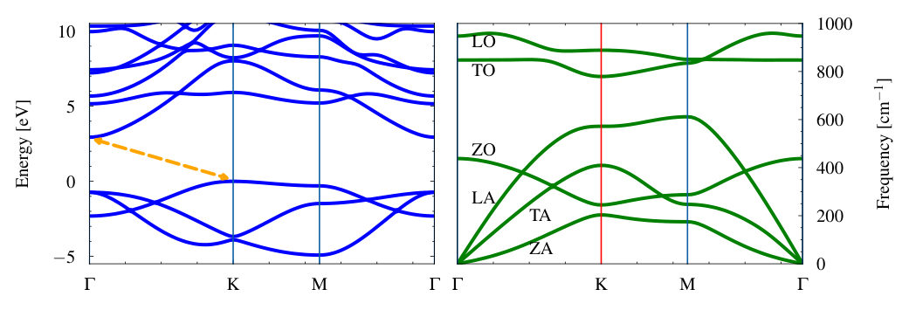
<figcaption class="paper-figure-caption"><b>Fig 1.</b> FIG. 1. Left panel: Kohn-Sham band structure along the high symmetry lines. Right panel: phonon dispersion along the same path. In the left panel the indirect gap is highlighted by an orange arrow, while the direct gap is situated at the Γ point.</figcaption>
</figure>
<figure class="paper-figure-card">
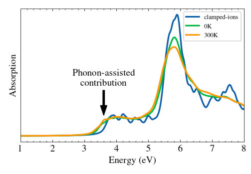
<figcaption class="paper-figure-caption"><b>Fig 2.</b> FIG. 2. Optical absorption of AlN monoayer calculated at clamped-ions and with SDM at 0 and 300 Kelvin using an 8 × 8 supercell with SDM.</figcaption>
</figure>
<figure class="paper-figure-card">
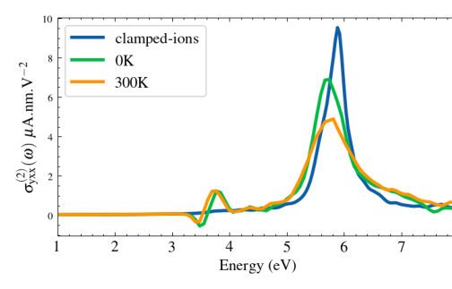
<figcaption class="paper-figure-caption"><b>Fig 3.</b> FIG. 3. Shift current response calculated at clamped ions and including quantum ions at 0 and 300 Kelvin using an 8×8 supercell with SDM.</figcaption>
</figure>
<figure class="paper-figure-card">
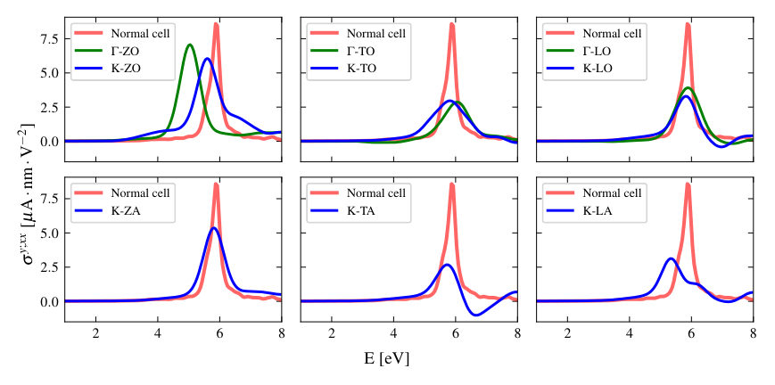
<figcaption class="paper-figure-caption"><b>Fig 4.</b> FIG. 4. Distortion of the shift-current response σy;xx for different phonon modes at Γ and K points. Phonon nomenclature follow the Γ point, see right panel of Fig. 1.</figcaption>
</figure>
</div>

<p><strong>Summary.</strong> This work develops a first-principles method combining the Special Displacement Method and real-time simulations to calculate non-linear optical responses, specifically the phonon-assisted shift current. Applying this to AlN monolayers, the authors show that lattice vibrations and temperature significantly modulate the current response, revealing key insights into phonon-mediated electronic transitions in layered materials.</p>
<p><strong>Why it may be interesting.</strong> The combination of real-time dynamics with phonon inclusion provides a powerful, non-perturbative way to calculate non-linear optical responses in solid-state systems, which is crucial for understanding light-matter interactions in complex materials.</p>
<details>
<summary>Detailed structure</summary>
<p><strong>Main problem.</strong> The study investigates the phonon-assisted shift current in extended systems, focusing on accurately modeling non-linear optical responses at finite temperatures.</p>
<p><strong>Main result.</strong> The research demonstrates that phonon-mediated processes significantly influence the shift current, causing a substantial temperature-dependent reduction and enabling the observation of new, phonon-assisted spectral features.</p>
<p><strong>Method.</strong> A novel first-principles approach is employed, combining the Special Displacement Method (SDM) with real-time simulations based on the dynamical Berry phase to incorporate lattice fluctuations.</p>
<p><strong>Model / system.</strong> The primary system studied is a monolayer of hexagonal AlN (h-AlN), chosen for its indirect band gap and lack of inversion symmetry, making it an ideal testbed for non-linear optical effects.</p>
<p><strong>Key observables.</strong> Shift current ($\sigma_{y;xx}(\omega)$), non-linear optical response ($\sigma^{(2)}$), and temperature-dependent spectral features.</p>
<p><strong>Important parameters / regimes.</strong> Finite temperature (e.g., 0 K vs 300 K), phonon frequencies, and the electronic dephasing time ($   au$).</p>
<p><strong>Assumptions / limitations.</strong> The SDM is used, which is formally exact for quadratic observables but remains an approximation for higher-order non-linear responses.</p>
<p><strong>Figures summary.</strong> Figures illustrate the band structure and phonon dispersion of AlN, compare optical absorption at different temperatures (clamped vs. SDM), and map the shift-current response for various phonon modes at different high-symmetry points.</p>
<p><strong>Paper structure.</strong> The paper introduces the theoretical framework combining SDM and real-time dynamics, applies it to h-AlN to calculate optical absorption and the shift current, and analyzes the temperature and phonon mode dependence of the resulting non-linear response.</p>
</details>
<details>
<summary>Abstract</summary>
<p>In this work, we present a first-principles approach to investigate phonon-assisted shift current in extended systems. Our method combines the special displacement technique with real-time simulations based on the dynamical Berry phase. Merging these two frameworks enables direct access to non-linear optical responses at finite temperatures, while naturally incorporating phonon scattering and phonon-assisted electronic transitions into the time-dependent dynamics. This allows us to capture temperature-dependent features and lattice fluctuations that are essential for a realistic description of non-linear photocurrent generation. As a representative example, we apply our approach to the shift-current response of a monolayer of hexagonal AlN (h-AlN). This system provides an ideal testing ground because it features an indirect band gap and lacks inversion symmetry. Moreover, h-AlN layers of different thicknesses have been fabricated and characterized in a variety of experimental settings, opening the concrete possibility of testing our predictions. Our results demonstrate the relevance of phonon-mediated processes and the importance of temperature in determining the magnitude and spectral features of the shift current in layered materials.</p>
</details>
<p><sub><a href="#top">↑ back to top</a></sub></p>

<p><a id="paper-2610.33303"></a></p>
<h3 id="chern-non-trivial-two-dimensional-square-net-nodal-line-semimetal"><a href="http://arxiv.org/abs/2610.33303v1">Chern non-trivial two-dimensional square-net nodal line semimetal</a></h3>
<p><strong>Authors:</strong> Kendall Ramos, Salvador Barraza-Lopez, Elias Andrade<br>
<strong>Type:</strong> theory · <strong>Category:</strong> other · <strong>PDF:</strong> <a href="https://arxiv.org/pdf/2610.33303v1">https://arxiv.org/pdf/2610.33303v1</a><br>
<strong>Analysis basis:</strong> full PDF text, analyzed in chunks
<strong>Topic relevance:</strong> <code>analog quantum simulation</code> <strong>2/5</strong></p>
<div class="figure-strip-hint">↔ Scroll figures horizontally</div>
<div class="paper-figures-scroll">
<figure class="paper-figure-card">
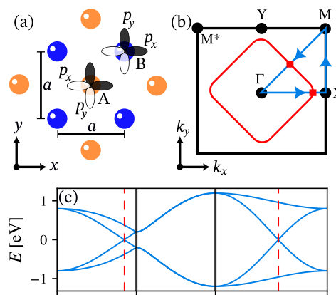
<figcaption class="paper-figure-caption"><b>Fig 1.</b> Figure 1. (a) Square lattice with two atoms per unit-cell, the sublattices are labeled as A and B and indicated by or- ange (light) and blue (dark) circles, respectively. Each of the atoms contributes to the tight-binding Hamiltonian with px and py orbitals, shown as well. (b) First Brillouin zone of the two-atom square lattice. The black circles indicate the high-symmetry points. The spectrum features a nodal line indicated schematically by the (red) curve. The path-shown is used to plot the dispersion in (c); squares show the points where the path crosses the nodal line.</figcaption>
</figure>
<figure class="paper-figure-card">
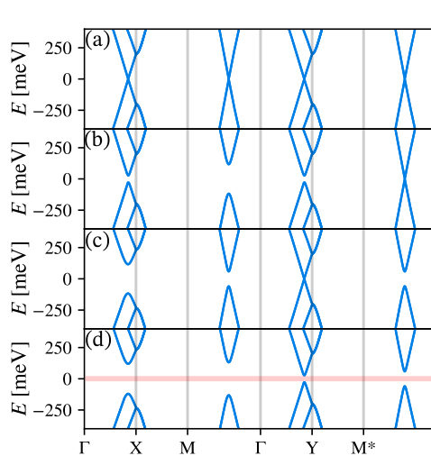
<figcaption class="paper-figure-caption"><b>Fig 2.</b> Figure 2. Band structures with the introduction of PSOC with η(k) as defined in Eq. (13) for different values of µ and λ. (a) µ = λ = 0. (b) µ = 30 meV and λ = 0. (c) µ = 0 and λ = 30 meV. (d) µ = λ = 30 meV, this is the only case where a gap is opened, as highlighted by the shaded region.</figcaption>
</figure>
<figure class="paper-figure-card">
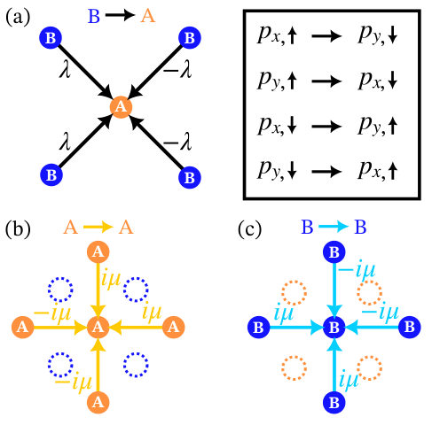
<figcaption class="paper-figure-caption"><b>Fig 3.</b> Figure 3. Mapping of the SOC η(k) in real space. (a) Inter- lattice interaction at first nearest neighbors, the magnitude of the interaction λ changes sign while moving along the x- direction. (b)-(c) Intralattice interaction for second nearest- neighbors with a imaginary amplitude µ. The signs are op- posite between sublattices. In each process there is a flip in the orbital and spin as indicated in the top-right inset.</figcaption>
</figure>
<figure class="paper-figure-card">
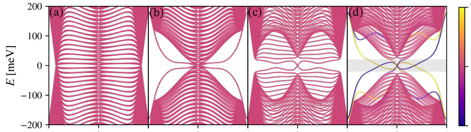
<figcaption class="paper-figure-caption"><b>Fig 4.</b> Figure 4. Band structure for nanoribbons of width 100a. (a) µ = 0 and λ = 0, (b) µ = 30 meV and λ = 0, (c) µ = 0 and λ = 30 meV and (d) µ = 30 meV and λ = 30 meV. The bands are colored according to their localization in the transverse direction of the ribbon, such that T and B stand for top and bottom edge, respectively. Shading in (d) indicates the bulk gap.</figcaption>
</figure>
</div>

<p><strong>Summary.</strong> This paper develops a theoretical framework to engineer Chern topology in 2D square-net semimetals using a modified tight-binding model. By introducing a momentum-dependent spin-orbit coupling that breaks time-reversal symmetry, the authors successfully opened a bulk gap and calculated a non-zero Chern number (C=2). This work establishes a general, phenomenological method for realizing such topological phases in these lattice systems.</p>
<p><strong>Why it may be interesting.</strong> The work provides a concrete, tunable theoretical mechanism (via engineered SOC) to realize non-trivial Chern insulators in a geometrically simple lattice structure, which is relevant for understanding topological phases in engineered quantum materials.</p>
<details>
<summary>Detailed structure</summary>
<p><strong>Main problem.</strong> To establish a phenomenological route to realizing Chern topology in two-dimensional square-net systems by engineering a gap-opening coupling.</p>
<p><strong>Main result.</strong> The authors successfully engineered a gap-opening coupling that results in a Chern-insulating phase with an occupied band Chern number of C=2, accompanied by edge-localized chiral edge states.</p>
<p><strong>Method.</strong> The analysis involves modifying a tight-binding Hamiltonian with a momentum-dependent spin-orbit coupling (SOC) and calculating the Chern number using lattice-gauge-invariant methods.</p>
<p><strong>Model / system.</strong> The system is a two-dimensional p_x p_y square-net tight-binding model with two sublattices. The Hamiltonian is modified by introducing a momentum-dependent term, $\eta(\mathbf{k})$, which breaks time-reversal symmetry.</p>
<p><strong>Key observables.</strong> Chern number (C=2), edge-localized states with two net chiral modes per edge, and the opening of a bulk gap.</p>
<p><strong>Important parameters / regimes.</strong> The parameters $\mu$ and $\lambda$ control the gap opening; the gap opens only when both $\mu 
eq 0$ and $\lambda 
eq 0$.</p>
<p><strong>Assumptions / limitations.</strong> The construction provides a phenomenological framework, meaning it does not require a specific microscopic realization in materials like ZrSiS to achieve the topology.</p>
<p><strong>Figures summary.</strong> Figure 1 shows the lattice structure and nodal line. Figure 2 demonstrates the gap opening in the band structure when both $\mu$ and $\lambda$ are non-zero. Figure 4 confirms the existence of edge-localized branches in nanoribbons.</p>
<p><strong>Paper structure.</strong> The paper first introduces the model and the need to open a gap across the nodal line. It then details the modification of the SOC term using $\eta(\mathbf{k})$ to break time-reversal symmetry. Finally, it calculates the resulting Chern number and analyzes the edge states via nanoribbon calculations.</p>
</details>
<details>
<summary>Abstract</summary>
<p>We investigate a two-dimensional $p_xp_y$ square-net tight-binding model with two sublattices and introduce a symmetry-informed, momentum-dependent spin-orbit coupling (SOC) with a finite-range real-space hopping representation. Its two components jointly gap the nodal line, while one breaks time-reversal symmetry, producing a Chern-insulating phase with an occupied band Chern number $C=2$. Nanoribbon calculations reveal edge-localized states traversing this gap, with two net chiral modes per edge. We further show that the conserved spin sectors are unitarily equivalent and therefore have equal Chern numbers, ruling out a nontrivial time-reversal-protected $\mathbb{Z}_2$ phase within this ansatz. Our results establish a phenomenological route to Chern topology in square-net two-dimensional systems and clarify the symmetry constraints governing the accessible insulating phases.</p>
</details>
<p><sub><a href="#top">↑ back to top</a></sub></p>

<p><a id="paper-2610.35381"></a></p>
<h3 id="momentum-resolved-thermodynamics-and-barrier-free-order-parameter-collapse-in-spin-orbit-coupled-superconductors-under-a-zeeman-field"><a href="http://arxiv.org/abs/2610.35381v1">Momentum-resolved thermodynamics and barrier-free order-parameter collapse in spin-orbit-coupled superconductors under a Zeeman field</a></h3>
<p><strong>Authors:</strong> Xusheng Wang, Gaomin Tang, Lianyi He, Shuai-Hua Ji<br>
<strong>Type:</strong> theory · <strong>Category:</strong> statistical mechanics · <strong>PDF:</strong> <a href="https://arxiv.org/pdf/2610.35381v1">https://arxiv.org/pdf/2610.35381v1</a><br>
<strong>Analysis basis:</strong> full PDF text, analyzed in chunks
<strong>Topic relevance:</strong> <code>Keldysh / 2PI / non-Gaussian methods</code> <strong>2/5</strong></p>
<div class="figure-strip-hint">↔ Scroll figures horizontally</div>
<div class="paper-figures-scroll">
<figure class="paper-figure-card">
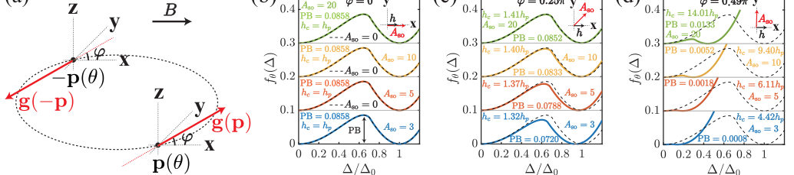
<figcaption class="paper-figure-caption"><b>Fig 1.</b> FIG. 1. (a) Schematic spin texture of a general time-reversal-symmetric SOC at ±p(θ), satisfying g(−p) = −g(p). (b-d) Angular-resolved free-energy landscapes for different SOC strengths at (b) φ = 0, (c) φ = 0.25π, and (d) φ = 0.49π. In (d), portions with fθ &gt; 0.1 are omitted. Here, hp denotes the Pauli-limited Zeeman field. Black dashed lines show the corresponding Pauli-limited free-energy landscapes for reference. The curves are rescaled and vertically offset by increments of 0.1 for clarity.</figcaption>
</figure>
<figure class="paper-figure-card">
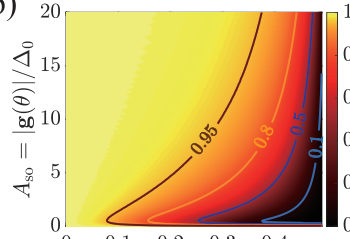
<figcaption class="paper-figure-caption"><b>Fig 2.</b> FIG. 2. (a) Critical field hc and (b) potential-barrier height PB as functions of the SOC orientation φ and strength Aso. The color scales represent hc/hp and PB/PB0, respectively, where hp and PB0 are the corresponding Pauli-limited values. The barrier height is evaluated at the corresponding critical field.</figcaption>
</figure>
<figure class="paper-figure-card">
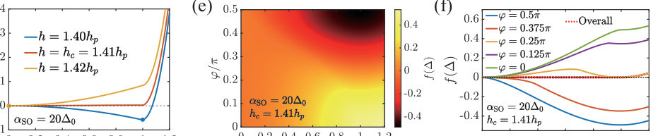
<figcaption class="paper-figure-caption"><b>Fig 3.</b> FIG. 3. Collapse of the superconducting order parameter and its origin in Rashba superconductors. (a) Schematic Rashba spin texture. (b) Normalized angular weight W(φ) of the φ slices. (c) Zeeman-field dependence of the superconducting order parameter for different Rashba SOC strengths. (d) Free-energy landscapes near the critical field for αso = 20∆0 (ASO = 20). The black dashed line corresponds to h = √</figcaption>
</figure>
<figure class="paper-figure-card">
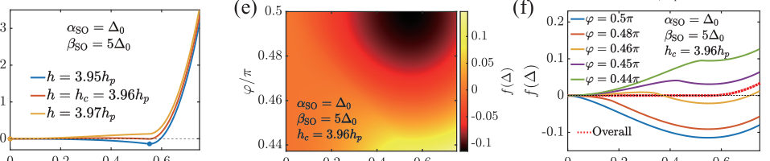
<figcaption class="paper-figure-caption"><b>Fig 4.</b> FIG. 4. Collapse of the superconducting order parameter and its origin in Ising superconductors with weak Rashba SOC. (a) Schematic spin texture of coexisting Ising and Rashba SOC. (b) Normalized angular weight W(φ) of the φ slices for different Rashba SOC strengths. (c) Zeeman-field dependence of the superconducting order parameter for different Rashba SOC strengths. (d) Free-energy landscapes near the critical field for αSO = ∆0. (e) Angular-resolved free-energy landscapes at the critical field for αSO = ∆0 and βSO = 5∆0. The color scale represents the free energy. (f) Representative φ-resolved free-energy profiles from (e), together with the total free-energy profile.</figcaption>
</figure>
</div>

<p><strong>Summary.</strong> This theoretical work analyzes how spin-orbit coupling modifies the superconducting phase transition in superconductors under a magnetic field. By decomposing the free energy based on momentum, the authors show that the order parameter collapses without the typical energy barrier when competing angular contributions cancel out. This mechanism provides a novel understanding of superconducting critical fields beyond simple Pauli limiting.</p>
<p><strong>Why it may be interesting.</strong> The concept of a barrier-free phase transition driven by competing angular contributions in the free energy landscape is a sophisticated many-body phenomenon relevant to understanding exotic superconducting phase transitions.</p>
<details>
<summary>Detailed structure</summary>
<p><strong>Main problem.</strong> The study investigates the momentum-resolved thermodynamics and the nature of the superconducting order-parameter collapse in spin-orbit-coupled superconductors subjected to an external Zeeman field.</p>
<p><strong>Main result.</strong> The abrupt collapse of the superconducting order parameter occurs due to the cancellation of competing angular contributions in the free energy, resulting in a barrier-free transition distinct from conventional first-order Pauli-limited transitions.</p>
<p><strong>Method.</strong> The authors employ a momentum decomposition of the zero-temperature free energy, analyzing angular contributions derived from the Bogoliubov-de Gennes Hamiltonian.</p>
<p><strong>Model / system.</strong> The model considers spin-singlet s-wave superconductors with general time-reversal-symmetric Spin-Orbit Coupling (SOC), specifically applying the framework to Rashba and Ising superconductors.</p>
<p><strong>Key observables.</strong> Critical Zeeman field ($h_c$), potential barrier height ($P_B$), and the superconducting order parameter ($\Delta$) as a function of the magnetic field.</p>
<p><strong>Important parameters / regimes.</strong> SOC strength ($\alpha_{SO}$), Zeeman field magnitude ($h$), and the relative orientation ($\varphi$) between the SOC vector and the Zeeman field.</p>
<p><strong>Assumptions / limitations.</strong> The analysis is performed in the zero-temperature limit, and for 2D systems, the SOC vector is approximated as being evaluated on the Fermi surface ($\mathbf{g}(\mathbf{p}) \simeq \mathbf{g}(	heta)$).</p>
<p><strong>Figures summary.</strong> Figures illustrate how $h_c$ and $P_B$ vary with SOC orientation and strength, and show free-energy landscapes confirming the barrier-free collapse mechanism in both Rashba and Ising systems.</p>
<p><strong>Paper structure.</strong> The paper develops the momentum-resolved free energy formalism, analyzes the SOC orientation dependence ($\phi$ dependence), and applies this framework to specific models (Rashba and Ising) to pinpoint the mechanism causing the barrier-free order parameter collapse.</p>
</details>
<details>
<summary>Abstract</summary>
<p>Spin-orbit coupling (SOC) can enhance the critical Zeeman field of clean superconductors beyond the Pauli limit. We develop a momentum decomposition of the zero-temperature free energy to investigate spin-singlet $s$-wave superconductors with general time-reversal-symmetric SOC. The SOC component perpendicular to the Zeeman field enhances the critical field and suppresses first-order features, whereas the parallel component favors Pauli-limited thermodynamic behavior. Applying this framework to Rashba superconductors and Ising superconductors with weak Rashba SOC, we identify the origin of the abrupt collapse of the superconducting order parameter at the critical field. Competing angular contributions produce a nearly flat free-energy landscape, allowing a barrier-free order-parameter collapse distinct from the conventional Pauli-limited first-order transition.</p>
</details>
<p><sub><a href="#top">↑ back to top</a></sub></p>

<p><a id="paper-2610.34526"></a></p>
<h3 id="geometric-tailoring-of-domain-wall-traps-and-diodes-in-ferromagnetic-nanostripes"><a href="http://arxiv.org/abs/2610.34526v1">Geometric tailoring of domain wall traps and diodes in ferromagnetic nanostripes</a></h3>
<p><strong>Authors:</strong> Dmytro Karakuts, Kostiantyn V. Yershov, Denis D. Sheka<br>
<strong>Type:</strong> both · <strong>Category:</strong> other · <strong>PDF:</strong> <a href="https://arxiv.org/pdf/2610.34526v1">https://arxiv.org/pdf/2610.34526v1</a><br>
<strong>Analysis basis:</strong> full PDF text, analyzed in chunks
<strong>Topic relevance:</strong> <code>Frenkel-Kontorova</code> <strong>1/5</strong> · <code>Keldysh / 2PI / non-Gaussian methods</code> <strong>1/5</strong> · <code>analog quantum simulation</code> <strong>1/5</strong> · <code>driven-dissipative phase transition</code> <strong>1/5</strong> · <code>methods for driven-dissipative</code> <strong>1/5</strong> · <code>non-equilibrium universality</code> <strong>1/5</strong> · <code>quantum measurements</code> <strong>1/5</strong> · <code>scars &amp; prethermalization</code> <strong>1/5</strong></p>
<div class="figure-strip-hint">↔ Scroll figures horizontally</div>
<div class="paper-figures-scroll">
<figure class="paper-figure-card">
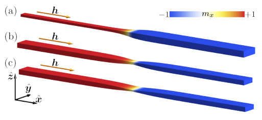
<figcaption class="paper-figure-caption"><b>Fig 1.</b> FIG. 1. Schematic illustration of DWs in ferromagnetic nanostripes of different geometries: (a) wedge-shaped nanos- tripe with a constant aspect ratio, (b) nanostripe with a local- ized constriction and a constant aspect ratio, and (c) nanos- tripe with a localized constriction produced by thickness variation alone. The cross-sectional profiles are defined by Eqs. (12), (13), and (22), respectively. The color scheme indi- cates the local magnetization direction, and the orange arrow denotes the applied-field direction.</figcaption>
</figure>
<figure class="paper-figure-card">
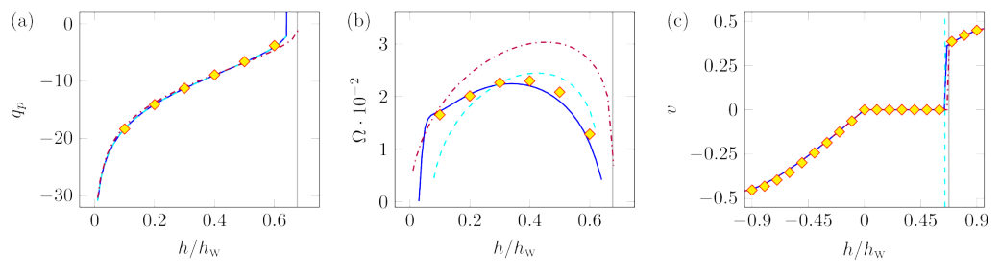
<figcaption class="paper-figure-caption"><b>Fig 2.</b> FIG. 2. Dynamics and pinning of DW in a wedge-shaped nanostripe: (a) DW pinning-position offset induced by an external magnetic field; (b) frequency of DW oscillations near the pinning position as a function of the applied field; and (c) DW velocity in the proposed DW diode as a function of the applied field. The dash-dotted red lines represent predictions from the narrow-DW approximation based on Eqs. (6), (9), and the numerical solution of Eq. (4), plotted in panels (a), (b), and (c), respectively. The vertical gray line marks the depinning field defined by Eq. (7). The solid blue curve shows the numerical solution of the equations of motion for a non-narrow DW; see Eq. (S25) in the...</figcaption>
</figure>
<figure class="paper-figure-card">
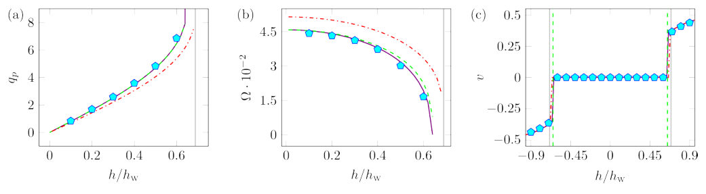
<figcaption class="paper-figure-caption"><b>Fig 3.</b> FIG. 3. Dynamics and pinning of DW in a constricted nanostripe: (a) DW pinning-position offset induced by an external magnetic field; (b) frequency of DW oscillations near the pinning position as a function of the applied field; and (c) DW velocity in the proposed DW trap as a function of the applied field. The dash-dotted red lines represent predictions from the narrow-DW approximation based on Eqs. (6), (9), and the numerical solution of Eq. (4), plotted in panels (a), (b), and (c), respectively. The vertical gray line marks the depinning field defined by Eq. (7). The solid purple curve shows the numerical solution of the equations of motion for a non-narrow DW; see Eq. (S25) in the...</figcaption>
</figure>
<figure class="paper-figure-card">
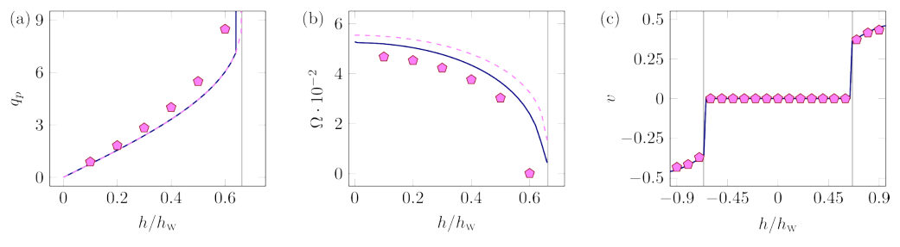
<figcaption class="paper-figure-caption"><b>Fig 4.</b> FIG. 4. Dynamics and pinning of a domain wall in a constricted nanostripe with varying thickness: (a) DW pinning-position offset induced by an external magnetic field; (b) frequency of DW oscillations near the pinning position as a function of the applied field; and (c) DW velocity in the proposed DW trap created by thickness variation as a function of the applied field. The solid blue curve shows the numerical solution of the equations of motion for the DW, Eq. (16a), while the dashed pink lines correspond to the analytical predictions given by Eqs. (17) and (19), plotted in panels (a) and (b), respectively. Symbols represent the results of full-scale micromagnetic simulations using NMAG...</figcaption>
</figure>
<figure class="paper-figure-card">
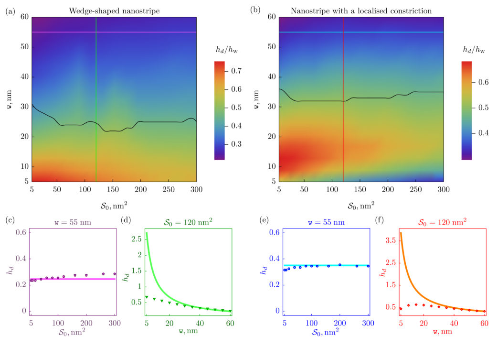
<figcaption class="paper-figure-caption"><b>Fig 5.</b> FIG. 5. Parameter dependence of the domain-wall depinning field and validity regimes of the theoretical approximations. Panels (a) and (b) show two-dimensional parameter maps of the DW depinning field obtained from NMAG [45] micromagnetic simulations for a wedge-shaped nanostripe (s = 0.05, α = 0.07) and a nanostripe with a localized constriction (s = 0.25, α = 0.15), respectively. The color scale indicates the applied field required for DW depinning, normalized by hw = αkp. The black isoline demarcates the range of validity of the narrow-DW approximation (7): above this contour, the narrow-DW theory accurately predicts the depinning field, whereas below it, the full non-narrow DW model is...</figcaption>
</figure>
</div>

<p><strong>Summary.</strong> This paper explores how engineering the physical shape of magnetic nanostripes can control the movement of domain walls. By creating constrictions or wedges, the authors demonstrate the realization of magnetic traps and diodes, which are key components for spintronic devices. The work combines advanced theoretical modeling with detailed micromagnetic simulations to predict these field-dependent magnetic behaviors.</p>
<p><strong>Why it may be interesting.</strong> While the core physics is classical magnetism, the study of non-linear dynamics, energy landscapes, and switching thresholds in confined systems shares conceptual parallels with understanding energy barriers and switching in quantum systems or Josephson junctions.</p>
<details>
<summary>Detailed structure</summary>
<p><strong>Main problem.</strong> The study investigates how varying the geometry of ferromagnetic nanostripes influences the dynamics, pinning, and switching behavior of magnetic domain walls (DWs). The goal is to engineer functional magnetic elements like traps and diodes.</p>
<p><strong>Main result.</strong> Geometric modulation allows for efficient pinning of domain walls, leading to characteristic trapping behavior at low fields and demonstrating diode-like switching characteristics at high fields. The theoretical predictions show excellent agreement with micromagnetic simulations.</p>
<p><strong>Method.</strong> The authors employ a combination of theoretical modeling using a biaxial ferromagnet Hamiltonian and a collective-variable approach, supplemented by detailed micromagnetic simulations.</p>
<p><strong>Model / system.</strong> The system is a thin ferromagnetic nanostripe whose cross-section $S(x)$ is intentionally modulated (e.g., wedge-shaped or constricted). The dynamics are governed by minimizing the effective DW energy derived from the magnetic Hamiltonian.</p>
<p><strong>Key observables.</strong> Domain wall pinning field ($h_d$), localized oscillation frequency ($\Omega$), DW velocity ($v$), and the directional asymmetry (diode effect) of motion.</p>
<p><strong>Important parameters / regimes.</strong> Cross-sectional gradient, applied magnetic field ($h$), anisotropy constants ($k_a, k_p$), and the geometry parameters defining the constriction or wedge.</p>
<p><strong>Assumptions / limitations.</strong> The analysis relies on the narrow-DW approximation in the theoretical derivations, and the simulations use specific damping and field ranges.</p>
<p><strong>Figures summary.</strong> Figures illustrate DW dynamics, showing pinning-position offsets, oscillation frequencies, and velocity curves for wedge-shaped and constricted nanostripes under varying magnetic fields, comparing theory to simulation.</p>
<p><strong>Paper structure.</strong> The paper develops from defining the physical system and Hamiltonian, deriving effective equations of motion using ansatz methods, analyzing pinning and dynamics in the narrow-DW limit, and finally validating these results through detailed micromagnetic simulations on specific geometries.</p>
</details>
<details>
<summary>Abstract</summary>
<p>Geometric tailoring of magnetic responses is a central theme in modern magnetism. By employing cross-sectional geometric modulation, we investigate how geometric variations influence the dynamics of field-driven domain walls. This approach enables the realization of a domain-wall trap, achieved through a nanostripe constriction, and a domain-wall diode, realized via a wedge-shaped expansion. We demonstrate that domain walls can be efficiently pinned by cross-sectional modulation, with the depinning field exhibiting strong dependence on the cross-sectional gradient. Under weak applied fields, the domain wall undergoes localized oscillations near the pinning site; under strong fields, this pinning breaks down, reproducing the typical diode characteristics. Theoretical calculations based on a biaxial ferromagnet model and a collective-variable approach are in excellent agreement with micromagnetic simulations. Finally, we delineate the parameter regime for realistic samples in which these predicted effects are most pronounced.</p>
</details>
<p><sub><a href="#top">↑ back to top</a></sub></p>

<p><a id="paper-2610.35245"></a></p>
<h3 id="high-q-high-power-spin-hall-nano-oscillators-with-thick-nife-layers-enabled-by-sic-substrates"><a href="http://arxiv.org/abs/2610.35245v1">High-Q, high-power spin Hall nano-oscillators with thick NiFe layers enabled by SiC substrates</a></h3>
<p><strong>Authors:</strong> Maha Khademi, Akash Kumar, Martina Ahlberg, Artem Litvinenko, Xiaotian Zhao, Saroj P. Dash, Johan Åkerman<br>
<strong>Type:</strong> experiment · <strong>Category:</strong> other · <strong>PDF:</strong> <a href="https://arxiv.org/pdf/2610.35245v1">https://arxiv.org/pdf/2610.35245v1</a><br>
<strong>Analysis basis:</strong> full PDF text, analyzed in chunks
<strong>Topic relevance:</strong> <code>analog quantum simulation</code> <strong>1/5</strong> · <code>correlated / nonlocal dissipation</code> <strong>1/5</strong> · <code>driven-dissipative phase transition</code> <strong>1/5</strong> · <code>methods for driven-dissipative</code> <strong>1/5</strong> · <code>non-equilibrium universality</code> <strong>1/5</strong> · <code>quantum measurements</code> <strong>1/5</strong></p>
<div class="figure-strip-hint">↔ Scroll figures horizontally</div>
<div class="paper-figures-scroll">
<figure class="paper-figure-card">
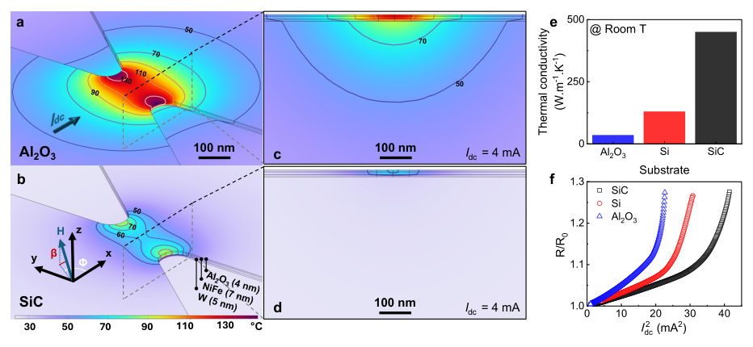
<figcaption class="paper-figure-caption"><b>Fig 1.</b> Figure 1: Thermal properties and simulated heat spreading in 200 nm SHNOs with tNiFe = 7 nm. (a,b) COMSOL temperature maps of SHNOs on (a) Al2O3 and (b) SiC substrates at Idc = 4 mA. The maps are plotted on the same temperature scale to enable direct comparison. The Al2O3 device develops a broad and strongly elevated temperature profile around the nanocon- striction, whereas the SiC device remains substantially cooler with a more spatially localized hot region. Isotherm contour lines indicate the local temperature distribution. (c,d) Correspond- ing cross-sectional temperature maps for (c) Al2O3 and (d) SiC, illustrating heat spreading through the device stack and into the substrate. (e)...</figcaption>
</figure>
<figure class="paper-figure-card">

<figcaption class="paper-figure-caption"><b>Fig 2.</b> Figure 1(a,b) shows the simulated temperature maps for 200 nm-wide SHNOs with tNiFe = 7 nm on Al2O3 and SiC substrates for an applied current (Idc) of 4 mA. The maps are plotted on the same temperature scale to enable direct comparison. In both devices, the hottest regions occur near the constriction edges, where the current density is largest. For Al2O3, the peak temperature reaches 142 ◦C, and the isotherm contours indicate that much of the constriction interior remains above 110 ◦C. In contrast, the SiC device remains substantially cooler, with most of the constriction region below 60 ◦C and the temperature rise confined more closely to the</figcaption>
</figure>
<figure class="paper-figure-card">
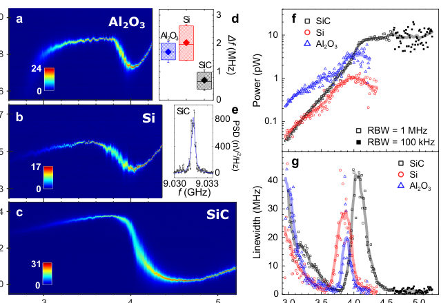
<figcaption class="paper-figure-caption"><b>Fig 3.</b> Figure 2: Auto-oscillation characteristics of 200 nm SHNOs with tNiFe = 7 nm fabricated on different substrates. (a–c) PSD maps of devices on (a) Al2O3, (b) Si, and (c) SiC, measured in an external magnetic field of 0.78 T. The numbers in the color bars indicate the upper limits of the plotted PSD scale in dB above the noise floor. (d) Linewidth statistics for Al2O3, Si, and SiC devices. The boxes span the 25th–75th percentiles, the center lines indicate the medians, the diamonds denote the means, and the whiskers represent the standard deviation. (e) Representative SiC spectrum and Lorentzian fit at IDC = 4.69 mA, giving a linewidth of ∆f = 0.4 MHz and Q = 24,000. (f,g) Integrated output...</figcaption>
</figure>
<figure class="paper-figure-card">
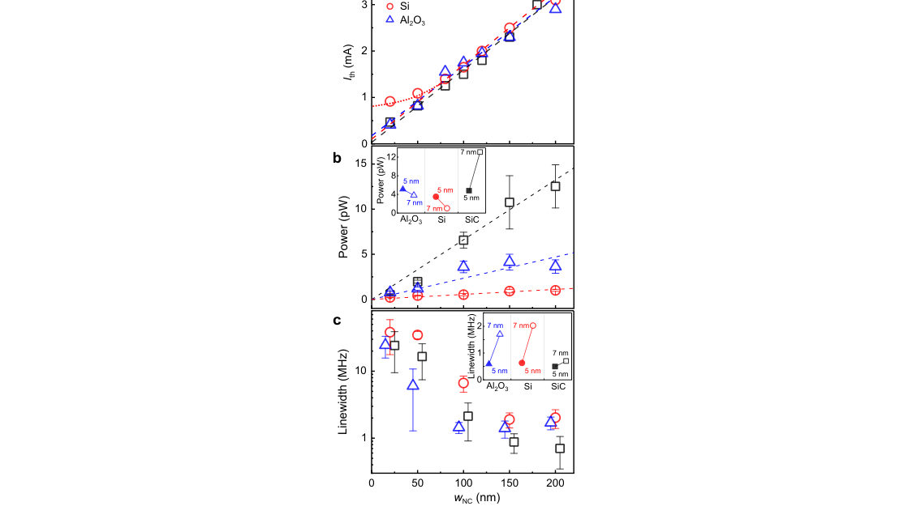
<figcaption class="paper-figure-caption"><b>Fig 4.</b> Figure 3: Nanoconstriction-width dependence of tNiFe = 7 nm SHNOs on different substrates. (a) Threshold current (Ith), (b) integrated output power, and (c) linewidth as functions of nanoconstriction width (wNC) for SHNOs fabricated on SiC, Si, and Al2O3 substrates. Error bars represent the standard deviation of the averaged data points. The dashed lines in (a,b) are guides to the eye. Data in (c) are horizontally offset for clarity. The inset in (b) compares the integrated output power of 200 nm SHNOs with tNiFe = 5 nm and 7 nm, while the inset in (c) shows the corresponding linewidth comparison. The measurements were performed in external magnetic fields of 0.77 T for tNiFe = 5 nm and...</figcaption>
</figure>
<figure class="paper-figure-card">
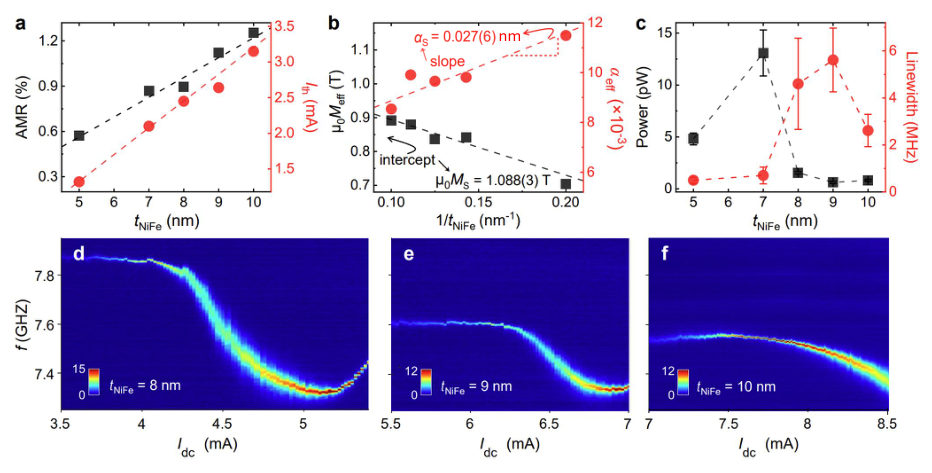
<figcaption class="paper-figure-caption"><b>Fig 5.</b> Figure 4: NiFe-thickness dependence of magnetic properties and auto-oscillation performance in 200 nm SHNOs on SiC substrates. (a) AMR ratio (black squares) and threshold current (red circles) as functions of NiFe thickness. (b) Effective magnetization (µ0Meff) and Gilbert damping (αeff) extracted from ST-FMR measurements. The slope of the damping gives the surface contribution, αS = 0.027 nm. The extrapolated bulk saturation magnetization is µ0MS = 1.088 T. (c) Integrated output power and linewidth as functions of NiFe thickness, showing optimum performance at tNiFe = 7 nm. (d–f) PSD maps of 200 nm SHNOs with tNiFe = 8 nm, 9 nm, and 10 nm, respectively, demonstrating auto-oscillations in...</figcaption>
</figure>
</div>

<p><strong>Summary.</strong> This work demonstrates that the thermal management of Spin Hall Nano-Oscillators (SHNOs) is critical for achieving high performance. By utilizing SiC substrates, which have high thermal conductivity, the researchers overcame Joule heating limitations, enabling the creation of highly coherent, high-power microwave sources compared to devices on traditional substrates.</p>
<p><strong>Why it may be interesting.</strong> While this is a condensed matter spintronics experiment, the core concept of thermal management and optimizing device performance through substrate engineering shares parallels with controlling environmental coupling in open quantum systems.</p>
<details>
<summary>Detailed structure</summary>
<p><strong>Main problem.</strong> The primary challenge is improving the output power and coherence of Spin Hall Nano-Oscillators (SHNOs) by increasing the ferromagnetic layer thickness while managing the associated Joule heating.</p>
<p><strong>Main result.</strong> Using SiC substrates, which possess high thermal conductivity, enables stable auto-oscillations in thick NiFe layers, achieving a record output power of 13.1 pW and a high quality factor of Q = 23,000.</p>
<p><strong>Method.</strong> The study combines electrical characterization (measuring power spectral density and resistance) with detailed thermal simulations using COMSOL Multiphysics.</p>
<p><strong>Model / system.</strong> The system involves W/NiFe nanoconstriction SHNOs fabricated on three different substrates: Al2O3, Si, and SiC. The performance is governed by spin-orbit torques and thermal dissipation.</p>
<p><strong>Key observables.</strong> Average output power (P), mean quality factor (Q), threshold current (I_th), and temperature profiles.</p>
<p><strong>Important parameters / regimes.</strong> Substrate thermal conductivities ($\kappa$): $\kappa_{SiC} = 450 	ext{ W/m}\cdot	ext{K}$ vs. $\kappa_{Al_2O_3} = 35 	ext{ W/m}\cdot	ext{K}$; optimal NiFe thickness found to be 7 nm.</p>
<p><strong>Assumptions / limitations.</strong> The analysis relies on the ability of SiC to effectively dissipate heat, preventing thermal runaway that plagues devices on lower-conductivity substrates.</p>
<p><strong>Figures summary.</strong> Figures compare thermal maps and normalized resistance vs. current for devices on different substrates, demonstrating SiC's superior heat spreading capabilities.</p>
<p><strong>Paper structure.</strong> The paper systematically compares the performance of SHNOs on Al2O3, Si, and SiC substrates, first establishing the thermal limitations, then optimizing the ferromagnetic layer thickness, and finally concluding that SiC substrate engineering is the key to high-performance devices.</p>
</details>
<details>
<summary>Abstract</summary>
<p>Spin Hall nano-oscillators (SHNOs) are nanoscale microwave sources with potential applications in local spin excitation, neuromorphic computing, and oscillator-based Ising machines. Further improvements in output power and coherence are essential for these applications, and increasing the thickness of the ferromagnetic layer offers a promising route toward this goal. However, this comes at the cost of higher drive currents, which increase Joule heating and can degrade device performance. Here, we show that this bottleneck can be overcome by SiC substrates. By comparing otherwise identical W/NiFe nanoconstriction SHNOs on Al2O3, Si, and SiC, we find that the high thermal conductivity of SiC enables stable auto-oscillations in NiFe layers as thick as 10 nm, while the optimum performance occurs at 7 nm. The best SiC device reaches an average output power of 13.1 pW and a mean quality factor of Q = 23,000, representing the highest reported simultaneous output power and coherence for a single free-running SHNO. These results establish SiC and thermal substrate engineering as a route to thick-ferromagnet spintronic oscillators for coherent microwave generation in nanoscale devices.</p>
</details>
<p><sub><a href="#top">↑ back to top</a></sub></p>

<p><a id="paper-2610.33989"></a></p>
<h3 id="momentum-selective-graphene-spectroscopy-of-moire-excitons"><a href="http://arxiv.org/abs/2610.33989v1">Momentum-selective graphene spectroscopy of moiré excitons</a></h3>
<p><strong>Authors:</strong> Katsunori Wakabayashi<br>
<strong>Type:</strong> theory · <strong>Category:</strong> other · <strong>PDF:</strong> <a href="https://arxiv.org/pdf/2610.33989v1">https://arxiv.org/pdf/2610.33989v1</a><br>
<strong>Analysis basis:</strong> full PDF text, analyzed in chunks
<strong>Topic relevance:</strong> <code>Keldysh / 2PI / non-Gaussian methods</code> <strong>1/5</strong> · <code>analog quantum simulation</code> <strong>1/5</strong> · <code>correlated / nonlocal dissipation</code> <strong>1/5</strong> · <code>driven-dissipative phase transition</code> <strong>1/5</strong> · <code>methods for driven-dissipative</code> <strong>1/5</strong> · <code>quantum measurements</code> <strong>1/5</strong></p>
<div class="figure-strip-hint">↔ Scroll figures horizontally</div>
<div class="paper-figures-scroll">
<figure class="paper-figure-card">
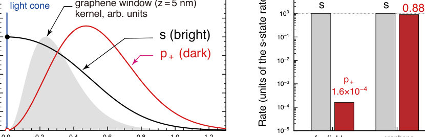
<figcaption class="paper-figure-caption"><b>Fig 1.</b> FIG. 1. Moiré exciton, device, and the momentum windows of the two baths. (a) Twisted WSe2/MoSe2 heterobilayer in top and side views (θ exaggerated) with an interlayer moiré exciton, whose electron and hole reside in different layers. (b) Device geometry. An hBN spacer of thickness z separates the exciton layer from a gated graphene sheet with Fermi level µF . The exciton decays radiatively (photoluminescence, rate Γγ,n) and by energy transfer that creates electron–hole pairs in graphene (rate ΓG,n(z)). Far-field photoluminescence and graphene energy transfer probe complementary momentum sectors of one transition polarization Pn(q), and thus select different moiré-exciton states. (c) The...</figcaption>
</figure>
<figure class="paper-figure-card">
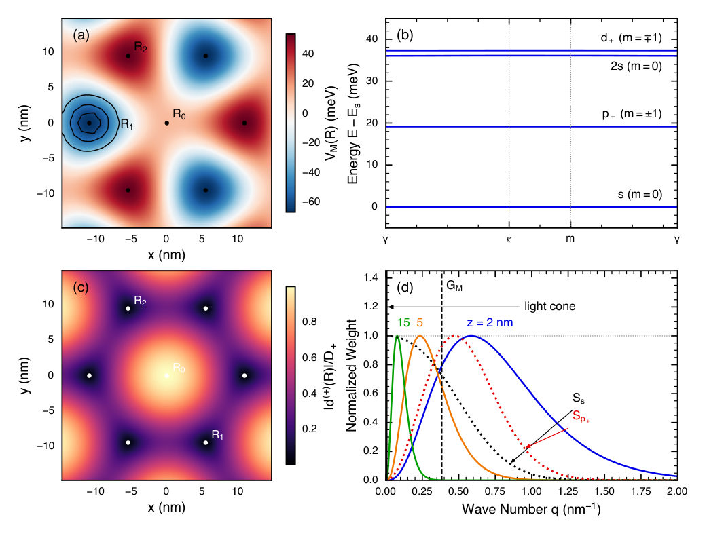
<figcaption class="paper-figure-caption"><b>Fig 2.</b> FIG. 2. Model overview for AA-stacked WSe2/MoSe2 at θ = 1◦. (a) Moiré potential VM(R) with the three registry sites and the s orbital |Ws| (contours) at the potential minimum R1. (b) Flat moiré minibands along γ–κ–m–γ with their C3 quasi- angular-momentum labels. (c) Magnitude of the σ+ dipole texture d(+)(R) [Eq. (3)]. The magnitude is maximal at R0 and vanishes at R1 and R2. Around the exciton site R1 its phase winds once (a vortex; the phase is not shown). (d) Momentum windows of the two baths. The panel shows the graphene kernel q3e−2γqz for three spacer thicknesses, the light cone, and the longitudinal spectral densities Ss(q) and Sp+(q) of the bright s and the q = 0-dark p+ [Eq. (9);...</figcaption>
</figure>
<figure class="paper-figure-card">
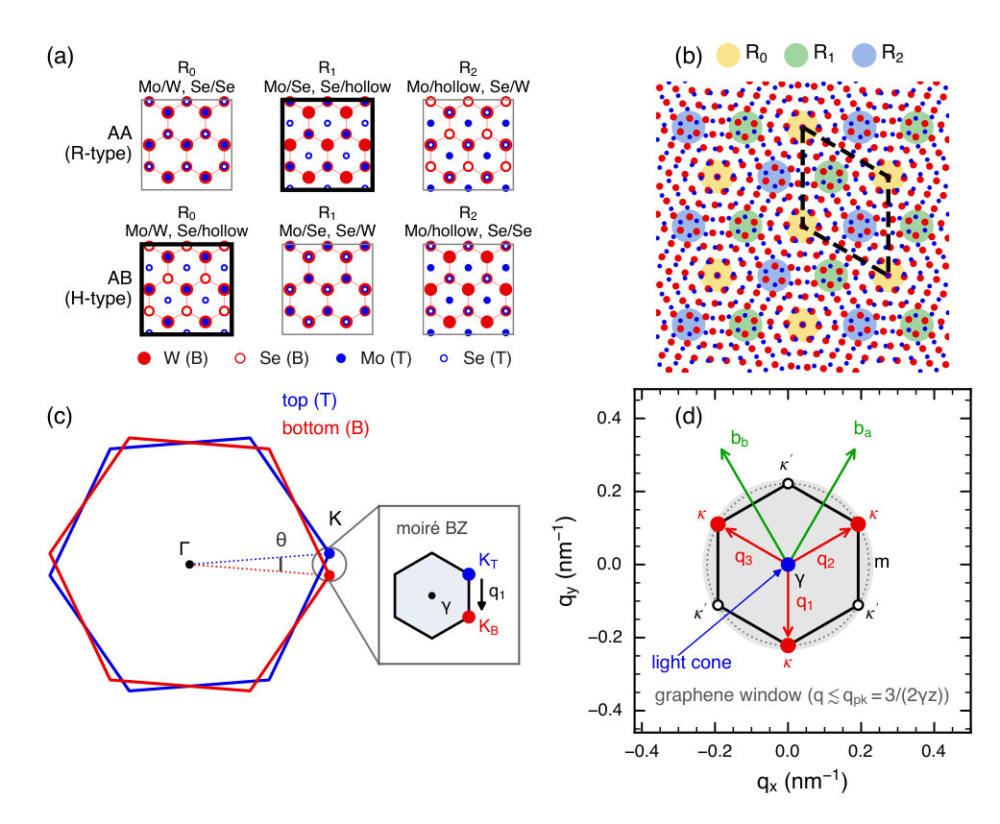
<figcaption class="paper-figure-caption"><b>Fig 3.</b> FIG. 3. Geometry of the twisted heterobilayer. (a) AA (R-type) and AB (H-type: top layer T rotated by π about the metal axis) stackings and the local arrangement at Rn = n(a1+a2)/3 (bold: exciton site). (b) Twisted metal lattices (θ exaggerated), moiré cell (dashed), and the regions of local displacement R0, R1, R2 (yellow, green, and blue discs). (c) Monolayer Brillouin zones of the top (T) and bottom (B) layers, rotated by ±θ/2 about Γ. The two layer K points (gray circle), split by GM/ √</figcaption>
</figure>
<figure class="paper-figure-card">
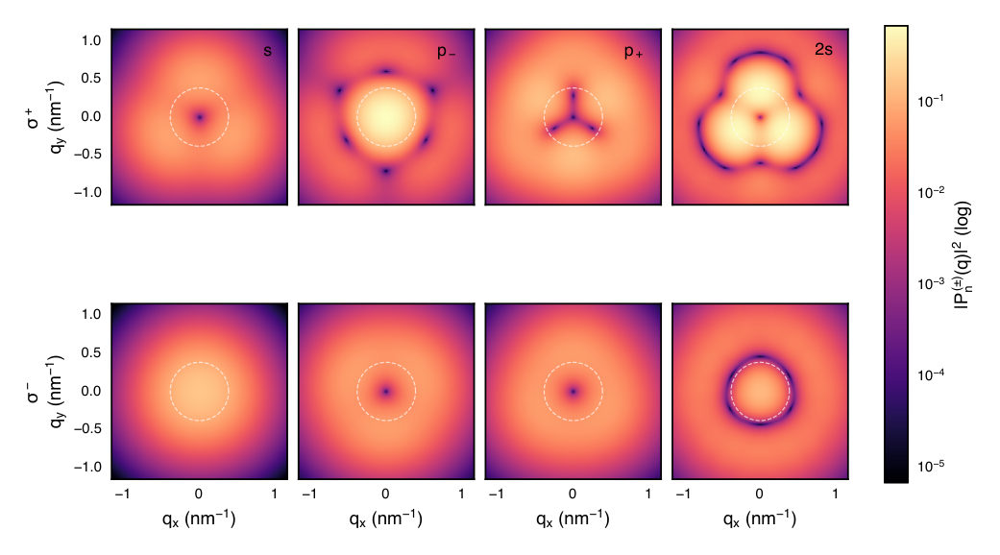
<figcaption class="paper-figure-caption"><b>Fig 4.</b> FIG. 4. Microscopic transition polarization |P (±) n (q)|2 (logarithmic color scale) of the four lowest moiré states for AA stacking at θ = 1◦; top row σ+, bottom row σ−. All panels share one logarithmic color scale spanning five decades below the global maximum over all states and channels, and intensities are directly comparable across panels. The dashed circle marks |q| = GM. Far-field optics reads only the central point of each panel—where, within the C3-symmetric leading-harmonic model, the m = +1 state p+ (like d−, not shown) vanishes exactly—while graphene at spacer z reads the longitudinal combination [Eq. (6)] over the disk q ≲qpk = 3/(2γz).</figcaption>
</figure>
<figure class="paper-figure-card">
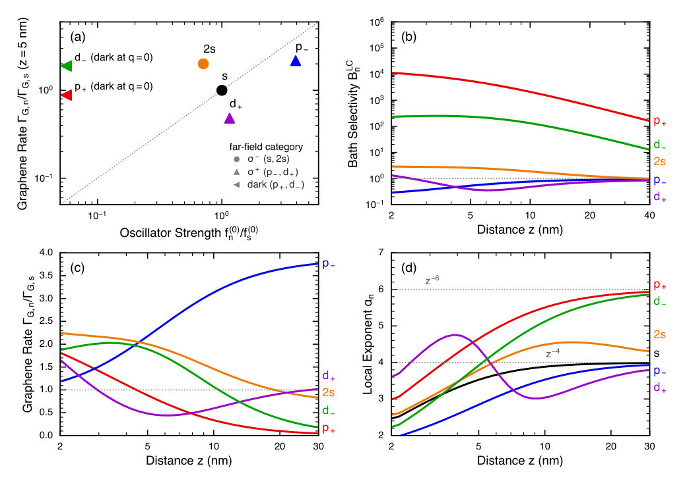
<figcaption class="paper-figure-caption"><b>Fig 5.</b> FIG. 5. State selectivity of the two baths and its distance dependence. (a) Photon versus graphene brightness (both normalized to the s state, z = 5 nm, longitudinal kernel). States above the diagonal are graphene favored. The q = 0-dark p+ and d−are placed at the left boundary as left-pointing triangles, since a vanishing normal-incidence oscillator strength cannot be shown on the logarithmic axis. The marker shape encodes the far-field category (circle σ−: s, 2s; triangle σ+ : p−, d+; left-pointing triangle, the q = 0-dark p+, d−). The panel thus doubles as the two-axis classification (far-field category × graphene) of Sec. III. (b) Physical (light-cone-normalized) bath selectivity BLC n...</figcaption>
</figure>
</div>

<p><strong>Summary.</strong> This work proposes using energy transfer from moiré excitons in TMD heterobilayers into nearby graphene as a momentum-selective spectroscopic tool. Unlike standard far-field measurements, which are limited to zero momentum, the graphene coupling samples the full in-plane momentum content. This technique allows researchers to characterize otherwise 'dark' exciton states and probe fundamental properties of the exciton dipole texture.</p>
<p><strong>Why it may be interesting.</strong> The concept of using energy transfer into a metallic bath (graphene) to map out the full momentum distribution of an exciton is a powerful analogy for open quantum system spectroscopy, linking solid-state physics to quantum optics.</p>
<details>
<summary>Detailed structure</summary>
<p><strong>Main problem.</strong> To develop a momentum-selective spectroscopy technique for moiré excitons, overcoming the limitations of far-field photoluminescence which only probes the light-cone corner.</p>
<p><strong>Main result.</strong> Graphene energy transfer acts as a momentum-selective near-field probe, revealing information about dark exciton states and the sign of the dipole texture phase invisible in far-field emission.</p>
<p><strong>Method.</strong> The authors construct the finite-q transition polarization P_n(q) for localized moiré excitons and compare the resulting decay rates from optical emission versus energy transfer into graphene.</p>
<p><strong>Model / system.</strong> The system is based on moiré superlattices formed by WSe2/MoSe2 heterobilayers, modeled using an exciton center-of-mass Hamiltonian and analyzed in a plane-wave basis.</p>
<p><strong>Key observables.</strong> Transition polarization P_n(q), ratio of graphene decay rates ($\Gamma_G$) to optical rates ($\Gamma_\gamma$), and the relative intensity of dark states.</p>
<p><strong>Important parameters / regimes.</strong> Spacer thickness (z), moiré potential strength (V_0), and the momentum transfer scale (up to 1/z).</p>
<p><strong>Assumptions / limitations.</strong> The analysis relies on the C3-symmetric leading-harmonic model and assumes that a protecting splitting exists in a real device to observe dark state coupling.</p>
<p><strong>Figures summary.</strong> Figures illustrate the momentum windows probed by far-field PL versus graphene transfer, and quantitatively show that states dark in far-field emission have significant coupling rates to graphene.</p>
<p><strong>Paper structure.</strong> The paper establishes the limitation of far-field PL, introduces the graphene energy transfer as a superior probe, calculates the transition polarization, and demonstrates how this probe reveals hidden physics like the sign of the dipole texture phase.</p>
</details>
<details>
<summary>Abstract</summary>
<p>Far-field photoluminescence probes only the light-cone corner of an exciton's momentum content, whereas energy transfer to nearby graphene integrates in-plane momenta up to the inverse spacer thickness $1/z$. For a WSe$_2$/MoSe$_2$ heterobilayer we build the transition polarization $\bm{P}_n(\qv)$ of each localized moiré exciton from the registry-dependent vector dipole texture and use each $\bm{P}_n$ for both baths. The two baths rank the states differently: the graphene-rate ratios differ from the optical ones, their ordering inverts with spacer thickness, and the distance exponents at $z=10$\,nm spread by more than two units. These ratios are independent of the transition-dipole prefactor. Within the $C_3$-symmetric leading-harmonic model the chiral $p_+$ and $d_-$ states are also dark at normal incidence yet transfer to graphene at rates comparable to the bright ground state. Their graphene rate depends on the sign of the texture phase, a quantity invisible in far-field emission, which we determine from first principles. In a device this prediction requires a splitting, larger than the symmetry-breaking mixing, that protects the chiral partners. Graphene proximity thus acts as a momentum-selective near-field probe of moiré excitons, and we propose its use as a practical spectroscopy.</p>
</details>
<p><sub><a href="#top">↑ back to top</a></sub></p>

<p><a id="paper-2610.35268"></a></p>
<h3 id="higher-harmonic-spin-wave-excitation-by-a-superconducting-antenna-with-vortices"><a href="http://arxiv.org/abs/2610.35268v1">Higher-harmonic spin-wave excitation by a superconducting antenna with vortices</a></h3>
<p><strong>Authors:</strong> Anton Pokusinskyi, Paweł Gruszecki, Julia Kharlan, Oleksandr Dobrovolskiy, Jarosław W. Kłos<br>
<strong>Type:</strong> both · <strong>Category:</strong> other · <strong>PDF:</strong> <a href="https://arxiv.org/pdf/2610.35268v1">https://arxiv.org/pdf/2610.35268v1</a><br>
<strong>Analysis basis:</strong> full PDF text, analyzed in chunks
<strong>Topic relevance:</strong> <code>Keldysh / 2PI / non-Gaussian methods</code> <strong>1/5</strong> · <code>driven-dissipative phase transition</code> <strong>1/5</strong> · <code>methods for driven-dissipative</code> <strong>1/5</strong></p>
<div class="figure-strip-hint">↔ Scroll figures horizontally</div>
<div class="paper-figures-scroll">
<figure class="paper-figure-card">
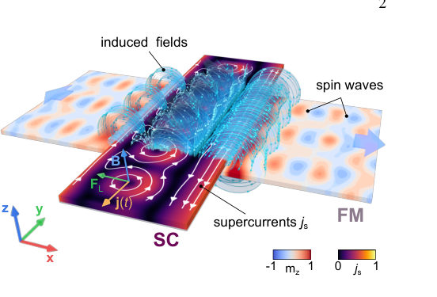
<figcaption class="paper-figure-caption"><b>Fig 1.</b> FIG. 1. Schematic of the considered geometry. A superconduct- ing (SC) strip antenna in an out-of-plane magnetic field B0 = 30 mT carries a GHz-frequency ac current density j(t), whose Lorentz force FL drives transverse oscillations of Abrikosov vortices. Despite their nearly harmonic motion, the vortex stray field varies nonsinusoidally at a fixed observation point. This modulation, together with vortex- induced current redistribution in the SC, generates higher harmon- ics that excite spin waves in the underlying magnonic conduit (FM) with perpendicular magnetic anisotropy (PMA). The dynamic out- of-plane magnetization mz is normalized to the saturation magne- tization Ms, while js...</figcaption>
</figure>
<figure class="paper-figure-card">
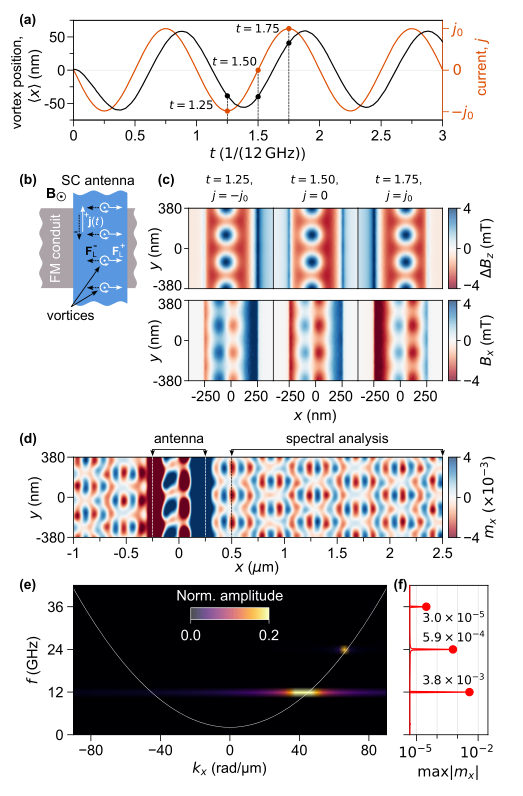
<figcaption class="paper-figure-caption"><b>Fig 2.</b> FIG. 2. (a) Vortex positions under an ac current density of ampli- tude j0 = 0.032 jTDGL, where jTDGL is the TDGL current-density unit (Appendix D). (b) Schematic of the SC antenna above the FM conduit. The ac-current-induced Lorentz force FL drives vortex os- cillations about their equilibrium positions. (c) In-plane Bx and out-of-plane ∆Bz field distributions at the three instants marked in (a), calculated 5 nm below the SC antenna at B0 = 30 mT, with Bz = B0 +∆Bz. (d) Steady-state spatial distribution of mx (in units of Ms) in the Ga:YIG conduit magnetized out of plane at B0 = 30 mT. Vertical dashed lines mark the SC antenna edges, 5 nm above the film, and the region used for spectral...</figcaption>
</figure>
<figure class="paper-figure-card">
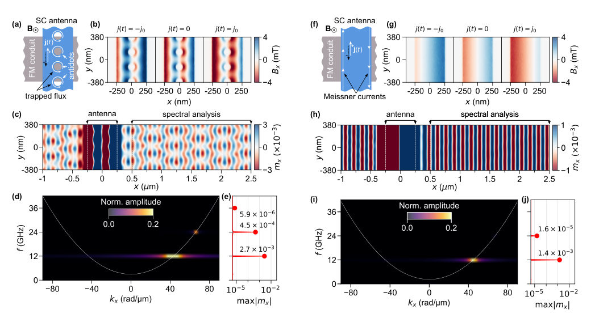
<figcaption class="paper-figure-caption"><b>Fig 3.</b> FIG. 3. Comparison of spin-wave excitation in a Ga:YIG conduit driven by an SC antenna with antidot-pinned vortices (a–e) and in the vortex- free Meissner state (f–j). (a,f) Schematics of the two configurations. (b,g) Spatial distributions of the in-plane rf field Bx at j = ±j0 and j = 0. (c,h) Steady-state spatial distributions of mx, indicating the antenna edges and spectral-analysis regions. (d,i) Corresponding frequency–wave- vector Fourier amplitude spectra. (e,j) Maximum temporal Fourier amplitudes. The pinned-vortex state exhibits pronounced higher harmonics, whereas the Meissner-state response is dominated by the fundamental at f = 12 GHz, with a weak residual second harmonic at 2...</figcaption>
</figure>
<figure class="paper-figure-card">
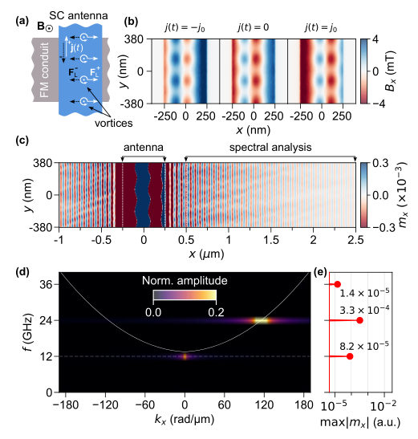
<figcaption class="paper-figure-caption"><b>Fig 4.</b> FIG. 4. Second-harmonic spin-wave generation in a CoFeB conduit driven by an SC antenna with unpinned vortices. The fundamental at f = 12GHz lies below the FMR frequency and cannot excite prop- agating spin waves. (a) Geometry. (b) Spatial distributions of Bx at j = ±j0 and j = 0. (c) Steady-state mx distribution and (d) corre- sponding frequency–wave-vector Fourier amplitude spectrum. The dashed line marks the fundamental at f, while the second harmonic at 2 f = 24GHz excites propagating spin waves. (e) Maximum tem- poral Fourier amplitudes. Plotting conventions and analysis details are as in Fig. 2.</figcaption>
</figure>
<figure class="paper-figure-card">
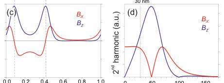
<figcaption class="paper-figure-caption"><b>Fig 5.</b> FIG. 5. Spatial-to-temporal transduction by an oscillating magnetic dipole. (a) Harmonic displacement of a z-oriented dipole along x, with oscillation period T. (b) Fourier amplitudes of the field compo- nents in (c), revealing higher harmonics of the driving frequency. (c) Temporal evolution of the in-plane (Bx) and out-of-plane (Bz) field components at a fixed off-center observation point, xobs = 30 nm. Despite purely harmonic dipole motion, the local field is strongly nonsinusoidal. (d) Spatial dependence of the Fourier coefficients, highlighting the localized nature of harmonic generation.</figcaption>
</figure>
</div>

<p><strong>Summary.</strong> This work demonstrates that superconducting vortices can act as active nonlinear sources to generate higher harmonics in the microwave field. These harmonics then efficiently excite spin waves in an adjacent magnetic film, proving that the superconducting element drives the nonlinear frequency conversion, while the magnetic layer remains a linear detector.</p>
<p><strong>Why it may be interesting.</strong> The concept of using superconducting flux quanta as active nonlinear elements for frequency conversion bridges superconducting physics, nonlinear dynamics, and magnonics, which has implications for advanced quantum sensing and energy transfer.</p>
<details>
<summary>Detailed structure</summary>
<p><strong>Main problem.</strong> The study investigates generating higher-harmonic spin-wave excitations in a magnetic film using a superconducting antenna containing Abrikosov vortices.</p>
<p><strong>Main result.</strong> Higher harmonics are generated via spatial-to-temporal transduction from the vortex motion in the SC antenna, allowing the magnetic layer to act as a linear receiver for frequency conversion.</p>
<p><strong>Method.</strong> The authors combine time-dependent Ginzburg-Landau modeling for the superconducting dynamics with micromagnetic simulations (Landau-Lifshitz-Gilbert equation) for the magnetic layer.</p>
<p><strong>Model / system.</strong> The system is a hybrid structure: a superconducting microstrip antenna (e.g., Lead) coupled to a magnetic film (e.g., Ga:YIG) containing Abrikosov vortices. The SC dynamics are governed by TDGL, while the magnetization dynamics use LLG.</p>
<p><strong>Key observables.</strong> Higher-harmonic spin-wave excitation (at $2f, 3f, \dots$), the frequency–wave-vector Fourier amplitude spectrum of magnetization.</p>
<p><strong>Important parameters / regimes.</strong> Drive frequency ($f=12$ GHz), bias field ($B_0 = 30$ mT), SC material ($    ext{Pb}$), and magnetic material ($ ext{Ga:YIG}$).</p>
<p><strong>Assumptions / limitations.</strong> The magnetic layer is treated as a linear receiver of the nonlinear microwave field generated by the SC antenna, and vortex motion is assumed to be nearly harmonic.</p>
<p><strong>Figures summary.</strong> Schematics illustrate the geometry and the physical process: Lorentz force drives vortex oscillations, leading to non-sinusoidal stray fields that generate higher harmonics exciting spin waves.</p>
<p><strong>Paper structure.</strong> The paper establishes the physical setup and problem, details the theoretical modeling using TDGL and LLG equations, presents the simulation parameters and analysis techniques (e.g., Fourier transforms), and concludes with the demonstration of higher-harmonic excitation.</p>
</details>
<details>
<summary>Abstract</summary>
<p>The interaction between superconductivity and magnetism provides new routes for controlling nonlinear excitations in hybrid systems. While dc-driven Abrikosov vortices (fluxons) are known to interact with spin waves, the ability of confined, nearly harmonic vortex oscillations to generate higher-frequency spin-wave modes remains unexplored. Here, by combining time-dependent Ginzburg--Landau modeling with spectral analysis of the microwave near field, we demonstrate higher-harmonic spin-wave excitation driven by a superconducting microstrip antenna in the Shubnikov phase. Unlike conventional harmonic-generation mechanisms associated with nonlinear magnetization dynamics, the magnetic layer remains a linear receiver, whereas the superconducting antenna generates the nonlinear microwave field. We show that nearly sinusoidal vortex motion and the accompanying redistribution of superconducting screening currents produce higher harmonics that couple to spin-wave modes. This response arises from spatial-to-temporal transduction, whereby harmonic vortex motion and the associated redistribution of screening currents convert a spatially nonuniform magnetic-field profile into higher temporal harmonics. Magnetic flux quanta thus act as active nonlinear elements for frequency conversion, extending the accessible spin-wave frequency range in superconducting--magnonic hybrids.</p>
</details>
<p><sub><a href="#top">↑ back to top</a></sub></p>

<p><a id="paper-2610.34924"></a></p>
<h3 id="nanoscale-mapping-of-native-defects-in-td-mote2-and-their-impact-on-graphene-based-van-der-waals-heterostructures"><a href="http://arxiv.org/abs/2610.34924v1">Nanoscale mapping of native defects in Td-MoTe2 and their impact on graphene-based van der Waals heterostructures</a></h3>
<p><strong>Authors:</strong> Wojciech Ryś, Iaroslav Lutsyk, Mindaugas Lukosius, Przemysław Przybysz, Paweł Dąbrowski, Maciej Rogala, Paweł Krukowski, Paweł J. Kowalczyk<br>
<strong>Type:</strong> experiment · <strong>Category:</strong> other · <strong>PDF:</strong> <a href="https://arxiv.org/pdf/2610.34924v1">https://arxiv.org/pdf/2610.34924v1</a><br>
<strong>Analysis basis:</strong> full PDF text, analyzed in chunks
<strong>Topic relevance:</strong> <code>analog quantum simulation</code> <strong>1/5</strong> · <code>driven-dissipative phase transition</code> <strong>1/5</strong> · <code>quantum measurements</code> <strong>1/5</strong></p>
<div class="figure-strip-hint">↔ Scroll figures horizontally</div>
<div class="paper-figures-scroll">
<figure class="paper-figure-card">
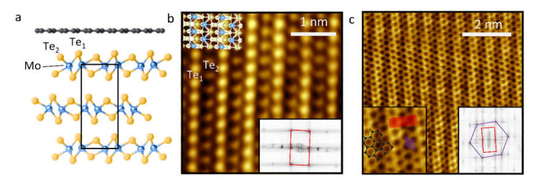
<figcaption class="paper-figure-caption"><b>Fig 1.</b> Figure 1. a) Ball-and-stick side-view model of graphene/MoTe2 heterostructure. Black, blue, and yellow balls correspond to carbon, molybdenum, and tellurium, respectively. b) A high-resolution STM topography of the UHV- exfoliated Td-MoTe2 (I = 0.3 nA; U = 0.15 V). c) The exemplary surface of graphene/MoTe2 (I = 0.2 nA; V = 0.35 V). The FFT and close-up surface images are shown in the insets. The graphene and TMDC surface unit cells are again marked by violet and red shapes, respectively. All data were acquired at ~77 K and FFT-filtered.</figcaption>
</figure>
<figure class="paper-figure-card">
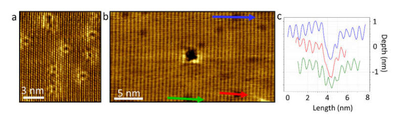
<figcaption class="paper-figure-caption"><b>Fig 2.</b> Figure 2. The images show a set of representative defect topographies for the pristine and hybrid MoTe2 systems. a) Typical pristine surface point-like defects for Td-MoTe2 surface (I = 0.7 nA; U = 0.07 V). b) Round, hollow defects present in the graphene/Td-MoTe2 system (I = 0.05 nA, U = -0.6 V). c) The depth profiles measured along the arrows drawn in “b”. All measurements were acquired at ~77 K. All the images shown are FFT-filtered.</figcaption>
</figure>
<figure class="paper-figure-card">
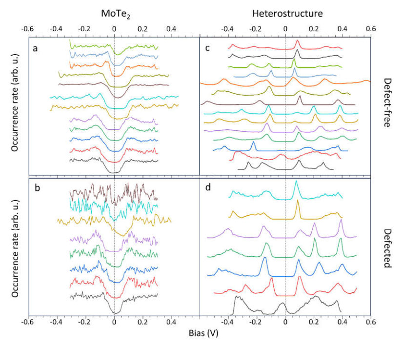
<figcaption class="paper-figure-caption"><b>Fig 3.</b> Figure 1. The set of histograms depicting the occurrence rates of the STS peak maxima for each acquired STS map. a) Data acquired for the pristine MoTe2. b) Data acquired for the MoTe2 defect sites. c) Data acquired for the defect-free surface of the heterostructure. d) Data acquired for the defect sites on the heterostructure. The intensities of the curves in each quadrant are normalised to facilitate comparison.</figcaption>
</figure>
<figure class="paper-figure-card">
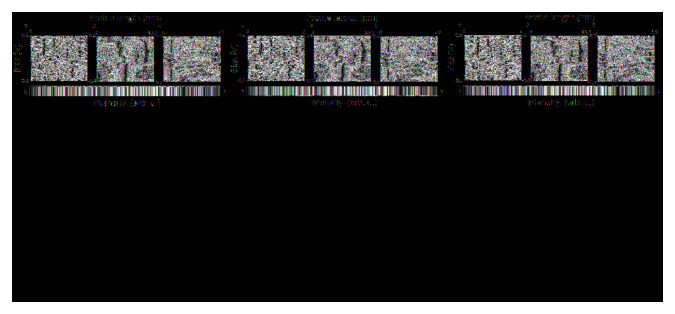
<figcaption class="paper-figure-caption"><b>Fig 4.</b> Figure 2. The flattened STS maps. The spectra originate from all the cross-section dI/dV maps present in the work and in the supplementary information. a) Pristine Td-MoTe2 map from Fig. 3c. b) Td-MoTe2 defect map from Fig. S3b. c) Heterostructure map from Fig. 3f. More details can be found in the methods section of the main text.</figcaption>
</figure>
<figure class="paper-figure-card">
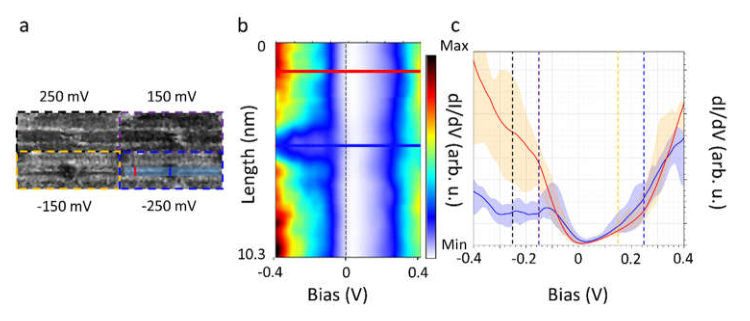
<figcaption class="paper-figure-caption"><b>Fig 5.</b> Figure 3. The STS data sets acquired for a typical defect in Td-MoTe2. a) A selection of dI/dV data slices (5×12 nm in size), b) the dI/dV data averaged along the profile drawn in a and b, c) the STS curves corresponding to the slices taken along the cuts of the profile in a. There is a min/max contour added to the curves, which corresponds to the thinner averaged profiles to highlight the volatility range. The spectra were acquired at ~80 K (I = 0.4 nA; U = -0.08 V).</figcaption>
</figure>
</div>

<p><strong>Summary.</strong> This work uses STM and STS to map native Te vacancies in Td-MoTe2 and analyze their electronic impact on graphene/MoTe2 heterostructures. The findings show that while vacancies perturb the electronic structure, the overlying graphene layer significantly screens these defects. This suggests that such heterostructures are robust and potentially defect-tolerant for device applications.</p>
<p><strong>Why it may be interesting.</strong> While primarily condensed matter/materials science, the study of defect-induced electronic perturbations and the screening effect by an overlying 2D material (graphene) is highly relevant to understanding interface engineering in quantum devices and open quantum systems.</p>
<details>
<summary>Detailed structure</summary>
<p><strong>Main problem.</strong> The study investigates how native defects, specifically Te vacancies, affect the electronic structure of Td-MoTe2 and how this interaction is modified when graphene is overlaid to form a van der Waals heterostructure.</p>
<p><strong>Main result.</strong> Isolated Te vacancies cause spectroscopically weak perturbations to the low-energy electronic structure of graphene, and the graphene overlayer effectively screens the impact of these interface defects, making the heterostructure intrinsically tolerant.</p>
<p><strong>Method.</strong> The research employed Scanning Tunneling Microscopy (STM) for topography and Scanning Tunneling Spectroscopy (STS) to probe the local electronic density of states.</p>
<p><strong>Model / system.</strong> The physical system is the Td-MoTe2 transition metal dichalcogenide interfaced with graphene, forming a van der Waals heterostructure. Defects are identified as Te vacancies.</p>
<p><strong>Key observables.</strong> dI/dV spectra (tunneling conductance), STM topography (hollow circular sites), and the persistence of MoTe2 electronic 'fingerprints' in the heterostructure.</p>
<p><strong>Important parameters / regimes.</strong> Defect density ($\sim 0.03 - 0.04 	ext{ per nm}^2$), temperature (77 K), and bias voltage ranges (e.g., below -0.1 V vs. -0.3 V).</p>
<p><strong>Assumptions / limitations.</strong> The suppression of conductance is interpreted as a redistribution of Mo–Te spectral weight rather than the introduction of new, sharp electronic states.</p>
<p><strong>Figures summary.</strong> Figures show STM topographies comparing pristine and defective areas, and STS data (dI/dV curves and maps) comparing measurements on bare MoTe2 versus the graphene/MoTe2 heterostructure across different defect conditions.</p>
<p><strong>Paper structure.</strong> The paper progresses by first characterizing the material and identifying Te vacancies via STM, then using STS to quantify the electronic impact of these vacancies on pristine MoTe2, and finally demonstrating the mitigating effect of the graphene overlayer on the defect signatures.</p>
</details>
<details>
<summary>Abstract</summary>
<p>We investigate native defects and their impact on the electronic structure of Td-MoTe2 and graphene/Td-MoTe2 van der Waals heterostructures using scanning tunnelling microscopy and spectroscopy. STM reveals a high density of circular, hollow surface defects that we attribute to Te vacancies. STS on pristine MoTe2 shows semimetallic, V-shaped dI/dV spectra with subtle low-energy states. The vacancies suppress the tunnelling conductance below the Fermi level without introducing new sharp defect-related resonances, consistent with a vacancy-induced redistribution of Mo-Te spectral weight rather than the appearance of new electronic states. In the heterostructure, graphene preserves these MoTe2 fingerprints with no noticeable graphene doping or charge transfer. Our results demonstrate that isolated native Te vacancies act as spectroscopically weak perturbations to the low-energy electronic structure of graphene. The graphene overlayer further screens their impact on the electronic structure, making graphene/Td-MoTe2 heterostructures intrinsically tolerant to such interface defects.</p>
</details>
<p><sub><a href="#top">↑ back to top</a></sub></p>

<p><a id="paper-2610.34270"></a></p>
<h3 id="andreev-reflection-at-a-graphene-normal-superconductor-interface-a-lattice-continuum-comparison"><a href="http://arxiv.org/abs/2610.34270v1">Andreev Reflection at a Graphene Normal-Superconductor Interface: A Lattice-Continuum Comparison</a></h3>
<p><strong>Authors:</strong> Dar Faheem Ul Haq, S. S. Z. Ashraf<br>
<strong>Type:</strong> theory · <strong>Category:</strong> other · <strong>PDF:</strong> <a href="https://arxiv.org/pdf/2610.34270v1">https://arxiv.org/pdf/2610.34270v1</a><br>
<strong>Analysis basis:</strong> full PDF text, analyzed in chunks
<strong>Topic relevance:</strong> <code>Keldysh / 2PI / non-Gaussian methods</code> <strong>1/5</strong></p>
<div class="figure-strip-hint">↔ Scroll figures horizontally</div>
<div class="paper-figures-scroll">
<figure class="paper-figure-card">
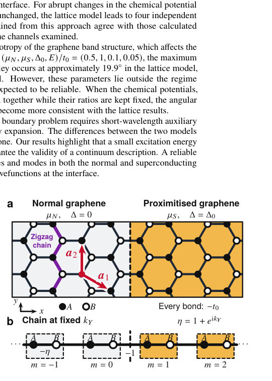
<figcaption class="paper-figure-caption"><b>Fig 1.</b> FIG. 1. (a) Graphene NS step parallel to 𝒂2. Filled and open circles denote the A and B sublattices. Purple bonds highlight a zigzag chain with repeat direction 𝒂2. The primitive translations are drawn between equivalent A sites: 𝒂1 = 𝑎CC(3/2, − √</figcaption>
</figure>
<figure class="paper-figure-card">
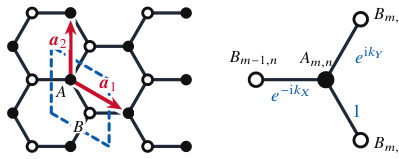
<figcaption class="paper-figure-caption"><b>Fig 2.</b> FIG. 2. Real-space origin of the lattice convention. (a) Filled and open circles denote A and B sites; the dashed primitive cell contains one of each. Arrows show 𝒂1 and 𝒂2. (b) The neighbours of 𝐴𝑚,𝑛 are 𝐵𝑚,𝑛, 𝐵𝑚,𝑛+1 and 𝐵𝑚−1,𝑛. Their relative cell-gauge Bloch factors are 1, 𝑒i𝑘𝑌and 𝑒−i𝑘𝑋. Every microscopic hopping is −𝑡0; the phase factors are not additional hopping strengths.</figcaption>
</figure>
<figure class="paper-figure-card">
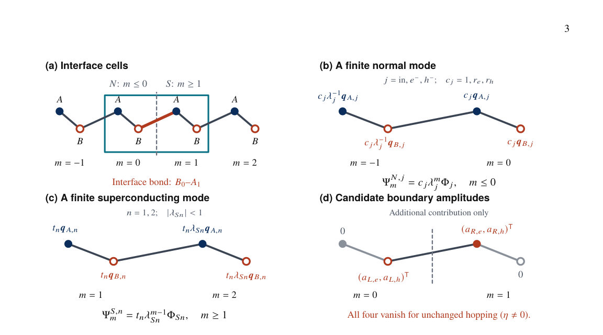
<figcaption class="paper-figure-caption"><b>Fig 3.</b> FIG. 3. Site amplitudes in the lattice matching construction. Write 𝒒𝑠, 𝑗= (𝑢𝑠, 𝑗, 𝑣𝑠, 𝑗)T for the electron and hole components on sublattice 𝑠= 𝐴, 𝐵of mode 𝑗. (a) The reduced chain is drawn schematically. The outline encloses cells 0 and 1, and the highlighted bond joins 𝐵0 to 𝐴1. (b) One finite normal mode, referenced to cell 0; 𝑗= in, 𝑒−, ℎ−has coefficient 𝑐𝑗= 1, 𝑟𝑒, 𝑟ℎ, respectively. (c) One right-decaying S mode, referenced to cell 1. (d) Candidate additional boundary contributions have support on 𝐵0 and 𝐴1 only. Zeros refer to this additional contribution, not to the full state. All four coefficients vanish for the present unchanged-hopping step with 𝜂≠0, as shown in Eq. (17).</figcaption>
</figure>
<figure class="paper-figure-card">
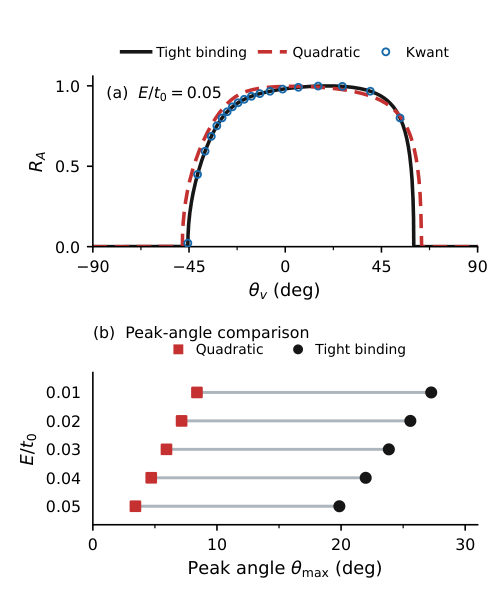
<figcaption class="paper-figure-caption"><b>Fig 4.</b> FIG. 4. Angular consequence of interface matching for (𝜇𝑁, 𝜇𝑆, Δ0)/𝑡0 = (0.5, 1, 0.1), 𝜉= +1. (a) Andreev reflection versus the group-velocity incidence angle at 𝐸/𝑡0 = 0.05: tight binding (black solid), quadratic continuum (red dashed), and selected independent Kwant values (open blue circles). (b) Refined peak angles at five excitation energies. Black circles and red squares denote the tight-binding and quadratic results, respectively. Each grey segment joins the two predictions at the same energy. The five full angular sweeps appear in Fig. S1.</figcaption>
</figure>
<figure class="paper-figure-card">
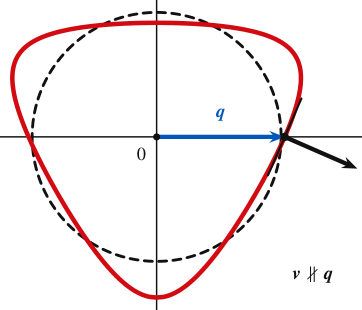
<figcaption class="paper-figure-caption"><b>Fig 5.</b> FIG. 5. Trigonal warping and the direction of propagation. The red solid curve is the exact nearest-neighbour contour in valley 𝜉= +1 at normal-state energy 𝜖+ = 0.8 in units of 𝑡0; the black dashed circle is its linear Dirac reference. Here (𝑄𝑥, 𝑄𝑦) = 𝑎CC(𝑞𝑥, 𝑞𝑦) is measured from the valley centre. At 𝑄𝑦= 0, 𝑄𝑥&gt; 0, the blue arrow shows 𝒒 and the black arrow shows the velocity direction. Velocity is normal to the contour (the short black segment is tangent), so it is not parallel to 𝒒. Arrow lengths are illustrative. The energy is chosen to display the geometry, not to specify another NS transport calculation.</figcaption>
</figure>
</div>

<p><strong>Summary.</strong> This work rigorously compares Andreev reflection calculations for a graphene normal-superconductor junction using both lattice tight-binding models and continuum approximations. The study reveals that simple low-energy continuum assumptions fail to capture the full physics, as significant discrepancies persist even when energy scales are reduced. The findings emphasize that accurate modeling requires careful consideration of boundary conditions and the full range of relevant energy scales.</p>
<p><strong>Why it may be interesting.</strong> The rigorous comparison between discrete lattice models and continuous approximations is a fundamental problem in mesoscopic physics, relevant for understanding transport in nanoscale superconducting junctions.</p>
<details>
<summary>Detailed structure</summary>
<p><strong>Main problem.</strong> The paper compares theoretical models (lattice vs. continuum) for Andreev reflection at a graphene normal-superconductor interface to determine the validity of low-energy approximations.</p>
<p><strong>Main result.</strong> Significant discrepancies exist between the lattice and continuum models for specific parameters, suggesting that continuum validity requires considering more than just small excitation energies.</p>
<p><strong>Method.</strong> The authors employ a combination of tight-binding lattice matching techniques and continuum approximations (quadratic and Dirac models) to calculate reflection probabilities and conductance.</p>
<p><strong>Model / system.</strong> The system is a graphene sheet interfaced with a superconductor (NS junction). The physics is modeled using nearest-neighbor tight-binding Hamiltonians and their continuum limits, incorporating superconducting pairing potentials and chemical potentials.</p>
<p><strong>Key observables.</strong> Andreev-reflection probability, reflection probabilities, normalized conductance ($ar{g}_{NS}$), and angular response.</p>
<p><strong>Important parameters / regimes.</strong> Chemical potentials ($\mu_N, \mu_S$), superconducting gap ($\Delta_0$), Fermi energy ($E$), and the ratio of energy scales to hopping ($t_0$).</p>
<p><strong>Assumptions / limitations.</strong> The quadratic continuum model assumes validity in the long-wavelength limit, but the authors show this assumption breaks down when comparing to lattice results.</p>
<p><strong>Figures summary.</strong> Figures illustrate the lattice geometry, the site amplitudes used for matching, and comparisons of Andreev reflection angles and subgap conductance across different theoretical models.</p>
<p><strong>Paper structure.</strong> The paper progresses by first establishing the lattice model boundary conditions, then comparing this to the quadratic continuum model, and finally contrasting both with a linear-Dirac model to pinpoint the limitations of the continuum approximation.</p>
</details>
<details>
<summary>Abstract</summary>
<p>We compare quadratic continuum and nearest-neighbour tight-binding models of Andreev reflection at a clean graphene normal-superconductor interface. For abrupt changes in chemical potential and pairing potential, with unchanged hopping, the lattice model yields four independent boundary conditions. Its reflection probabilities agree with independent Kwant calculations to numerical precision for the channels examined.   We investigate trigonal warping and its effect on the relation between momentum and group velocity. For $(μ_N,μ_S,Δ_0,E)/t_0=(0.5,1,0.1,0.05)$, the Andreev-reflection probability for the $ξ=+1$ valley peaks at $19.9^\circ$ in the lattice model, versus $3.4^\circ$ in the quadratic continuum model. These parameters lie outside the expected validity regime of the low-energy approximation. As all energy scales are reduced at fixed ratios, the central angular response and conductance become more consistent with lattice results.   The quadratic continuum boundary problem also requires short-wavelength auxiliary modes outside the validity range of the valley expansion. Thus, differences cannot be attributed to bulk dispersion alone. A small excitation energy relative to chemical potential does not ensure continuum validity; relevant energy scales, modes in both regions, and interface matching assumptions must also be considered.</p>
</details>
<p><sub><a href="#top">↑ back to top</a></sub></p>

<p><a id="paper-2610.34857"></a></p>
<h3 id="equivalent-pseudo-angular-momentum-governs-selective-magnon-phonon-hybridization"><a href="http://arxiv.org/abs/2610.34857v1">Equivalent Pseudo-angular Momentum Governs Selective Magnon-Phonon Hybridization</a></h3>
<p><strong>Authors:</strong> Hong Sun, Hao Chen, Lifa Zhang<br>
<strong>Type:</strong> theory · <strong>Category:</strong> other · <strong>PDF:</strong> <a href="https://arxiv.org/pdf/2610.34857v1">https://arxiv.org/pdf/2610.34857v1</a><br>
<strong>Analysis basis:</strong> full PDF text, analyzed in chunks
<strong>Topic relevance:</strong> <code>analog quantum simulation</code> <strong>1/5</strong></p>
<div class="figure-strip-hint">↔ Scroll figures horizontally</div>
<div class="paper-figures-scroll">
<figure class="paper-figure-card">
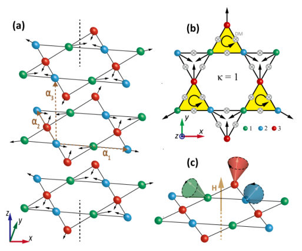
<figcaption class="paper-figure-caption"><b>Fig 1.</b> FIG. 1. Model geometry and magnetic configurations. (a) Stacked kagome lattice and its zero-field spin configuration. The dashed arrows denote the primitive lattice vectors α1, α2, and α3. (b) Top view of a single layer with spin vector chirality 𝜅= 1. Gray ⊗symbols denote DM vectors pointing into −ˆz, while the curved arrows specify the oriented-bond convention; colors label sublattices 1–3. (c) Field- canted configuration for H ∥ˆz, with the cones illustrating local spin precession.</figcaption>
</figure>
<figure class="paper-figure-card">

<figcaption class="paper-figure-caption"><b>Fig 2.</b> FIG. 2. Zero-field spectra and equivalent magnetoelastic coupling channels. (a) Uncoupled magnon (blue) and phonon (red) dispersions along Γ–M–K–Γ. The dashed box marks the K-point region of interest. (b) Enlarged spectrum near K for 𝜆𝐷= 0, with K(−) and K(+) denoting momenta on either side of K. (c) Corresponding spectrum for 𝜆𝐷= 0.5 meV/ ˚A. Solid bands are colored by magnon weight, from phonon-like (red) to magnon-like (blue), and gray dashed lines denote the uncoupled dispersions. (d) Energies of the magnon-like and phonon-like doublets at K versus 𝜆𝐷; both remain twofold degenerate. (e) Singular values 𝑠1 and 𝑠2 of the magnon–phonon coupling matrix between the two doublets at K versus...</figcaption>
</figure>
<figure class="paper-figure-card">

<figcaption class="paper-figure-caption"><b>Fig 3.</b> FIG. 3. Field-induced mode selectivity at K for 𝜆𝐷= 0.5 meV/ ˚A. (a) Hybrid-mode energies at K versus ℎ𝑧, colored by magnon weight; pale dashed lines denote the uncoupled energies. Open circles mark the zero-field doublets, and the vertical dashed line indi- cates ℎ∗𝑧= 2.5 meV. (b) Singular values 𝑠1 and 𝑠2 of the pro- jected magnon–phonon coupling matrix versus ℎ𝑧. Insets show</figcaption>
</figure>
<figure class="paper-figure-card">

<figcaption class="paper-figure-caption"><b>Fig 4.</b> FIG. 4. Crystalline pseudoangular momentum and hybrid-mode decomposition at K. (a),(b) Displacement patterns and 𝐶3 transformations of the phonon modes with 𝑙ph = 0 and 1, respectively. (c),(d) Spin-precession patterns and 𝐶3 transformations of the magnon modes with 𝑙m = 0 and 1, respectively, represented in the local spin frames. (e) Uncoupled spectra for ℎ𝑧= ±2.5 meV (left and middle) and the coupled spectrum for 𝜆𝐷= 0.5 meV/ ˚A (right). (f) Relative projection weights of the hybrid modes onto the selected uncoupled magnon and phonon modes for the two field directions. Filled cells denote finite mode participation.</figcaption>
</figure>
</div>

<p><strong>Summary.</strong> This work introduces crystalline pseudoangular momentum as a fundamental symmetry rule governing how magnons and phonons interact in complex magnetic materials. By applying this rule to a stacked kagome model, the authors show that hybridization is not just determined by energy resonance, but by the matching of these pseudoangular momenta. This provides a general framework for controlling spin-lattice coupling in noncollinear magnets.</p>
<p><strong>Why it may be interesting.</strong> The concept of pseudoangular momentum as a symmetry filter for coupling mechanisms is a powerful, generalizable tool for understanding mode selectivity in coupled quantum systems, analogous to selection rules in spectroscopy.</p>
<details>
<summary>Detailed structure</summary>
<p><strong>Main problem.</strong> The paper addresses the unclear symmetry principle governing selective magnon-phonon hybridization in complex, noncollinear magnetic systems.</p>
<p><strong>Main result.</strong> Crystalline pseudoangular momentum provides a general symmetry criterion dictating that only magnon-phonon pairs matching this momentum can hybridize strongly, allowing for symmetry-controlled mode selectivity.</p>
<p><strong>Method.</strong> The analysis involves deriving the magnetoelastic coupling Hamiltonian based on crystal symmetry ($C_n$) and solving the resulting bosonic generalized eigenvalue problem.</p>
<p><strong>Model / system.</strong> The study uses a stacked kagome lattice model exhibiting noncollinear $120^\circ$ spin order, coupling magnetic excitations (magnons) to lattice vibrations (phonons).</p>
<p><strong>Key observables.</strong> Avoided crossing in the excitation spectrum, basis-independent coupling strengths ($s_1, s_2$), and the rotational polarization of the hybridized phonon component.</p>
<p><strong>Important parameters / regimes.</strong> Out-of-plane magnetic field strength ($h_z$), which tunes the system into resonance and breaks symmetry.</p>
<p><strong>Assumptions / limitations.</strong> The magnetoelastic interaction is assumed to preserve the underlying crystalline rotational symmetry ($C_n$).</p>
<p><strong>Figures summary.</strong> Figures illustrate the model geometry, the uncoupled and coupled spectra, and show how the coupling strength imbalance ($s_1 
eq s_2$) emerges when a magnetic field is applied, confirming selective hybridization.</p>
<p><strong>Paper structure.</strong> The paper first establishes the general symmetry constraint using pseudoangular momentum, then models the coupling via a bond-length dependent DM interaction, and finally demonstrates field-induced selectivity by analyzing the resulting spectral changes and mode decompositions.</p>
</details>
<details>
<summary>Abstract</summary>
<p>Magnon-phonon hybridization provides a powerful route to couple spin and lattice excitations, yet the symmetry principle governing mode selectivity remains unclear. Here, we show that crystalline pseudoangular momentum provides a general criterion for selective magnon-phonon hybridization in noncollinear multisublattice magnetic systems. The rotation eigenvalue associated with pseudoangular momentum encodes polarization transformations, sublattice permutations, and Bloch phases, requiring magnetoelastic coupling between modes belonging to the same rotation sector. We illustrate this principle in a stacked kagome model with noncollinear spin order. An out-of-plane magnetic field tunes one magnon sector into resonance with a degenerate phonon doublet, yet only the pseudoangular-momentum-matched phonon develops a pronounced avoided crossing while the other remains nearly unmixed. Field reversal switches the selected rotation sector and reverses the rotational polarization of the hybridized phonon component without changing the hybrid-mode energies. Our results reveal pseudoangular-momentum matching as a general framework for understanding and controlling mode-selective spin-lattice hybridization.</p>
</details>
<p><sub><a href="#top">↑ back to top</a></sub></p>

<p><a id="paper-2610.34168"></a></p>
<h3 id="field-misalignment-effect-on-the-in-plane-magnetoresistance-in-the-high-temperature-superconductor-fesesrtio3"><a href="http://arxiv.org/abs/2610.34168v1">Field misalignment effect on the in-plane magnetoresistance in the high-temperature superconductor FeSe/SrTiO3</a></h3>
<p><strong>Authors:</strong> Jie Liu, Zihan Cui, Xiaorong Liu, Yanzhao Liu, Ziqiao Wang, Jian Wang, Yi Liu<br>
<strong>Type:</strong> both · <strong>Category:</strong> strongly correlated electrons · <strong>PDF:</strong> <a href="https://arxiv.org/pdf/2610.34168v1">https://arxiv.org/pdf/2610.34168v1</a><br>
<strong>Analysis basis:</strong> full PDF text, analyzed in chunks
<strong>Topic relevance:</strong> <code>quantum measurements</code> <strong>1/5</strong></p>
<div class="figure-strip-hint">↔ Scroll figures horizontally</div>
<div class="paper-figures-scroll">
<figure class="paper-figure-card">

<figcaption class="paper-figure-caption"><b>Fig 1.</b> FIG. 1. STM topography and superconducting property of FeSe film on STO substrate.</figcaption>
</figure>
<figure class="paper-figure-card">

<figcaption class="paper-figure-caption"><b>Fig 2.</b> Figure 1(a) displays the scanning tunneling microscopy (STM) topographic image</figcaption>
</figure>
<figure class="paper-figure-card">

<figcaption class="paper-figure-caption"><b>Fig 3.</b> FIG. 2. Angular dependence of in-plane magnetoresistance in FeSe/STO. (a) Schematic</figcaption>
</figure>
<figure class="paper-figure-card">

<figcaption class="paper-figure-caption"><b>Fig 4.</b> FIG. 3. Geometric analysis of field misalignment and its effect on the anisotropic in-</figcaption>
</figure>
<figure class="paper-figure-card">

<figcaption class="paper-figure-caption"><b>Fig 5.</b> FIG. 4. Anisotropic in-plane magnetoresistance R(φ) in FeSe/STO. (a) Measured R(φ)</figcaption>
</figure>
</div>

<p><strong>Summary.</strong> This work investigates the in-plane magnetoresistance in FeSe/SrTiO3 to detect superconducting pairing symmetry breaking. The key finding is that the measurement is highly susceptible to field misalignment, which is quantified using a detailed geometric model. This framework provides a practical method for researchers to isolate intrinsic superconducting anisotropies from experimental measurement artifacts.</p>
<p><strong>Why it may be interesting.</strong> While focused on superconductivity, the rigorous geometric analysis and the development of a framework to decouple intrinsic material properties from experimental setup artifacts (like field misalignment) is a powerful methodological tool applicable to any anisotropic condensed matter measurement.</p>
<details>
<summary>Detailed structure</summary>
<p><strong>Main problem.</strong> The study aims to probe rotational symmetry breaking in high-temperature superconductors by analyzing the azimuthal angular dependence of the in-plane magnetoresistance, while rigorously accounting for the confounding effects of magnetic field misalignment.</p>
<p><strong>Main result.</strong> The observed anisotropic magnetoresistance features (e.g., single-dip vs. double-dip) are shown to be extremely sensitive to field misalignment, and a geometric model successfully captures this dependence.</p>
<p><strong>Method.</strong> The authors combine systematic electrical transport measurements with a detailed geometric model derived from vector projections to calculate the effective out-of-plane magnetic field angle $\theta(\varphi)$ as a function of the rotation angle $\varphi$.</p>
<p><strong>Model / system.</strong> The physical system is ultrathin FeSe films grown on SrTiO3. The analysis models the magnetic field $\vec{B}$ relative to the sample plane, deriving $\theta(\varphi)$ based on the tilt angle of the sample relative to the rotation plane.</p>
<p><strong>Key observables.</strong> In-plane magnetoresistance $R(\varphi)$, and the effective out-of-plane magnetic field angle $\theta(\varphi)$.</p>
<p><strong>Important parameters / regimes.</strong> High magnetic field (up to 14 T), low temperatures ($T \le 20 \text{ K}$), and the geometric misalignment angles ($\theta_{\text{sample}}$, $\theta_{\text{field}}$).</p>
<p><strong>Assumptions / limitations.</strong> The primary assumption is that the observed angular dependence is dominated by the geometric effect of field misalignment, which is mathematically modeled using vector projections.</p>
<p><strong>Figures summary.</strong> Figures illustrate STM topography and superconducting transitions, and crucially, compare measured $R(\varphi)$ curves for different sample mounting orientations, demonstrating distinct angular patterns.</p>
<p><strong>Paper structure.</strong> The paper establishes the physical challenge (field misalignment sensitivity), presents experimental evidence showing different $R(\varphi)$ patterns upon remounting, develops a detailed geometric model to calculate the effective field angle $\theta(\varphi)$, and finally uses this model to explain the observed anisotropic magnetoresistance.</p>
</details>
<details>
<summary>Abstract</summary>
<p>The azimuthal angular dependence of the in-plane magnetoresistance provides a powerful probe for detecting rotational symmetry breaking in superconductors, which has significant implications for understanding the superconducting pairing symmetry and the intertwined orders. However, in two-dimensional or layered superconductors with strong anisotropy between in-plane and out-of-plane critical fields, measuring the in-plane magnetoresistance is particularly challenging as it is extremely sensitive to the field misalignment. Here we perform systematic electrical transport measurements on ultrathin FeSe films grown on SrTiO3 substrates. By remounting the same FeSe film to change the field misalignment, two qualitatively different angular dependences of the in-plane magnetoresistance are observed in the superconducting transition region, indicating the extreme sensitivity of the measurement to field misalignment. The observed anisotropic in-plane magnetoresistance can be well captured by our geometric model considering the field misalignment effect. Our work provides a practical framework for disentangling the misalignment effect and investigating the in-plane rotational symmetry breaking in two-dimensional or layered superconductors.</p>
</details>
<p><sub><a href="#top">↑ back to top</a></sub></p>

<p><a id="paper-2610.35614"></a></p>
<h3 id="giant-third-order-nonlinearity-amplifies-second-harmonic-transport-in-ca3ru2o7"><a href="http://arxiv.org/abs/2610.35614v1">Giant third-order nonlinearity amplifies second-harmonic transport in Ca3Ru2O7</a></h3>
<p><strong>Authors:</strong> Subin Mali, Yufei Zhao, Yu Wang, Binghai Yan, Zhiqiang Mao<br>
<strong>Type:</strong> both · <strong>Category:</strong> strongly correlated electrons · <strong>PDF:</strong> <a href="https://arxiv.org/pdf/2610.35614v1">https://arxiv.org/pdf/2610.35614v1</a><br>
<strong>Analysis basis:</strong> full PDF text, analyzed in chunks
<strong>Topic relevance:</strong> <code>Keldysh / 2PI / non-Gaussian methods</code> <strong>1/5</strong></p>
<div class="figure-strip-hint">↔ Scroll figures horizontally</div>
<div class="paper-figures-scroll">
<figure class="paper-figure-card">

<figcaption class="paper-figure-caption"><b>Fig 1.</b> Figure 1. Device characterization and dc-field-driven second-order Hall response for CRO. (a) False-colored</figcaption>
</figure>
<figure class="paper-figure-card">

<figcaption class="paper-figure-caption"><b>Fig 2.</b> Figure 2. Angular dependence of the dc-field-induced second-order Hall response. (a) Schematic of the</figcaption>
</figure>
<figure class="paper-figure-card">

<figcaption class="paper-figure-caption"><b>Fig 3.</b> Figure 3. DC-field-induced longitudinal second-harmonic response. (a) Longitudinal second-harmonic voltage</figcaption>
</figure>
</div>

<p><strong>Summary.</strong> The authors demonstrate that the second-harmonic transport in the correlated material Ca3Ru2O7 is governed by a giant third-order nonlinearity, which is controllable via an applied DC bias. This strong nonlinear response is intrinsically linked to the material's electronic reconstruction occurring below a specific transition temperature. The findings establish a pathway for electrically tuning nonlinear optical responses in correlated topological materials.</p>
<p><strong>Why it may be interesting.</strong> This work demonstrates how strong electronic correlations can manifest as giant, electrically tunable nonlinear responses, providing a platform for studying emergent quantum phenomena in condensed matter systems.</p>
<details>
<summary>Detailed structure</summary>
<p><strong>Main problem.</strong> To investigate how strong higher-order nonlinearity can amplify an effective second-order response, providing a route to electrically tunable nonlinear transport in correlated materials.</p>
<p><strong>Main result.</strong> The dc-field-induced second-harmonic transport in Ca3Ru2O7 is shown to arise from its third-order nonlinear conductivity, which is strongly enhanced by the material's low-temperature electronic reconstruction.</p>
<p><strong>Method.</strong> The study combines electrical transport measurements (measuring second-harmonic voltage response under dc bias) with theoretical calculations (DFT+U) to model the nonlinear conductivity tensor.</p>
<p><strong>Model / system.</strong> The physical system is Ca3Ru2O7 (CRO), a correlated polar metal. The analysis focuses on the nonlinear current density described by a third-order tensor, $\mathbf{j}_i^{2\omega} \propto \sigma_{i;jkl}^{(3)} E_j^{\omega} E_k^{\omega} E_{l}^{	ext{dc}}$.</p>
<p><strong>Key observables.</strong> Second-harmonic voltage response ($\mathbf{V}^{2\omega}$), third-order conductivity ($\sigma^{(3)}$), and the temperature dependence of the response relative to the spin-reorientation transition ($T_S \approx 48 	ext{ K}$).</p>
<p><strong>Important parameters / regimes.</strong> The third-harmonic electric-field responsivity reaches $4.5 	imes 10^{-6} 	ext{ m}^2	ext{V}^{-2}$ at $3 	ext{ K}$. The enhancement factor of the second-harmonic signal is reported to be $>10$ times.</p>
<p><strong>Assumptions / limitations.</strong> The enhancement mechanism is attributed to the reconstruction of the low-energy electronic state below $T_S$, which modifies the underlying third-order conductivity tensor.</p>
<p><strong>Figures summary.</strong> Figures show device geometry and magnetoresistance, alongside temperature-dependent resistivity and the dc-bias-induced second-harmonic response. Angular dependence studies map out the symmetry-allowed components of the nonlinear response.</p>
<p><strong>Paper structure.</strong> The paper establishes the context of nonlinear transport, details the experimental measurements of the second-harmonic response in CRO, analyzes the scaling and angular dependence to confirm its origin in third-order conductivity, and concludes by linking this giant nonlinearity to the correlated electronic reconstruction.</p>
</details>
<details>
<summary>Abstract</summary>
<p>Nonlinear electrical transport enables the conversion and detection of electromagnetic signals, supporting wireless energy harvesting, sensing and frequency conversion. Achieving both a large response and electrical tunability remains a central materials challenge. Here we harness giant third-order nonlinearity to amplify and electrically control second-harmonic transport in the correlated polar metal Ca3Ru2O7. Superposing a dc bias on an ac excitation enhances the second-harmonic signal by more than an order of magnitude. The bias controls the polarity of the induced response and activates channels forbidden by symmetry at zero bias. Both transverse and longitudinal components scale quadratically with the ac excitation and are odd in the dc bias, with angular dependences consistent with third-order conductivity. The underlying third-harmonic electric-field responsivity reaches 4.5 \times 10-6 m2V-2 at 3 K, providing a quantitative measure of the strong nonlinearity. The induced response emerges below the spin-reorientation transition near 48 K, linking its enhancement to the reconstructed low-temperature electronic state. Theoretical calculations identify quantum-geometric contributions to the nonlinear conductivity and reproduce the observed response symmetry. These results demonstrate how strong higher-order nonlinearity can amplify an effective second-order response, providing a route to electrically tunable nonlinear transport in correlated materials.</p>
</details>
<p><sub><a href="#top">↑ back to top</a></sub></p>

<p><a id="paper-2610.35799"></a></p>
<h3 id="modeling-the-cnot-gate-in-germanium-double-quantum-dots"><a href="http://arxiv.org/abs/2610.35799v1">Modeling the CNOT gate in Germanium double quantum dots</a></h3>
<p><strong>Authors:</strong> Mauricio J. Rodriguez, Yann-Michel Niquet<br>
<strong>Type:</strong> theory · <strong>Category:</strong> quantum information and computing · <strong>PDF:</strong> <a href="https://arxiv.org/pdf/2610.35799v1">https://arxiv.org/pdf/2610.35799v1</a><br>
<strong>Analysis basis:</strong> full PDF text, analyzed in chunks
<strong>Topic relevance:</strong> <code>quantum measurements</code> <strong>1/5</strong></p>
<div class="figure-strip-hint">↔ Scroll figures horizontally</div>
<div class="paper-figures-scroll">
<figure class="paper-figure-card">

<figcaption class="paper-figure-caption"><b>Fig 1.</b> FIG. 1. (a) The DQD device. The 16-nm-thick Ge well is colored in red, and Ge0.8Si0.2 in blue. The 20-nm-thick aluminium gates (in gray) are arranged on two levels sepa- rated from each other and from the heterostructure by 8 nm of Al2O3: the J gate and the barrier gates BXY on the first level, and the plunger gates PL and PR on the second. The diameter of the plunger gates is d = 130 nm and their cen- ters are separated by s = 170 nm. The width of the J gate is wJ = 60 nm and the width of the barrier gates is wB = 90 nm. The orientation of the magnetic field B is characterized by the polar and azimuthal angles θ and φ. The yellow shape is the iso-density surfaces enclosing 85% of the...</figcaption>
</figure>
<figure class="paper-figure-card">

<figcaption class="paper-figure-caption"><b>Fig 2.</b> FIG. 2. Scheme of the energy levels of an asymmetric two- hole DQD at high magnetic field. The dashed lines are the energies of the |⇑⇓⟩and |⇓⇑⟩states in the non-interacting limit. We also mark the relevant transition frequencies f⇑= (E⇑⇑−E⇑⇓)/h and f⇑= (E⇓⇑−E⇓⇓)/h that depend on the longitudinal exchange energy J∥.</figcaption>
</figure>
<figure class="paper-figure-card">

<figcaption class="paper-figure-caption"><b>Fig 3.</b> FIG. 3. Map of the longitudinal exchange energy J∥as a function of the orientation of the magnetic field characterized by the angles θ and φ defined in Fig. 1. The bias point is VL = −72.5 mV, VR = −35 mV and VJ = −15 mV.</figcaption>
</figure>
<figure class="paper-figure-card">

<figcaption class="paper-figure-caption"><b>Fig 4.</b> FIG. 4. Longitudinal exchange energy J∥as a function of the J-gate voltage VJ. The bias is VL = −72.5 mV, VR = −35 mV, and the magnetic field is B = 1 T along x. The dressed basis set data (line) are compared to full CI calculations (dots).</figcaption>
</figure>
<figure class="paper-figure-card">

<figcaption class="paper-figure-caption"><b>Fig 5.</b> FIG. 5. Timing diagram of the pulse sequence applied to the different gates in order to achieve the CNOT operation.</figcaption>
</figure>
</div>

<p><strong>Summary.</strong> This work theoretically models the CNOT gate operation in hole spin qubits within a Germanium double quantum dot. It identifies key sources of gate infidelity, including non-adiabatic dynamics and charge noise effects. The results quantify the necessary control over barrier ramps and microwave driving to achieve high-fidelity quantum operations.</p>
<p><strong>Why it may be interesting.</strong> It provides quantitative metrics for realizing high-fidelity two-qubit gates in solid-state spin qubits, directly addressing the engineering challenges of noise and control required for quantum computation.</p>
<details>
<summary>Detailed structure</summary>
<p><strong>Main problem.</strong> The paper models and analyzes the sources of infidelity when implementing a Controlled-NOT (CNOT) gate using hole spin qubits in a Germanium double quantum dot.</p>
<p><strong>Main result.</strong> Infidelity is limited by non-adiabaticity during barrier ramps, the AC Stark shift of the conditional resonance, and the disruptive effects of charge noise (both static capture and dynamic motion).</p>
<p><strong>Method.</strong> Time-dependent simulations are performed using a computationally efficient dressed basis approach to track the evolution of the spin system through the gate sequence.</p>
<p><strong>Model / system.</strong> The system is a hole spin-qubit device in a Ge/GeSi DQD, modeled by an effective Hamiltonian involving longitudinal and transverse exchange interactions ($J_{\parallel}, J_{\perp}$) and Zeeman splitting. The CNOT gate relies on resonant microwave driving conditional on the state of one qubit.</p>
<p><strong>Key observables.</strong> Gate fidelity ($F$), probability of leakage outside the computational subspace, and the dependence of fidelity on noise parameters.</p>
<p><strong>Important parameters / regimes.</strong> Tunnel coupling ($J$), microwave driving frequency ($f_{\downarrow}$), barrier ramp speed ($   au_J$), and charge noise dipole moment ($p=qd$).</p>
<p><strong>Assumptions / limitations.</strong> The use of a compact dressed basis set is necessary to manage the computational cost compared to a full Configuration Interaction approach.</p>
<p><strong>Figures summary.</strong> Figures illustrate the DQD device structure, the energy level scheme for relevant transitions, and probability distributions showing state evolution during gate ramps.</p>
<p><strong>Paper structure.</strong> The paper first establishes the physical model and the CNOT protocol, then analyzes ideal limitations (non-adiabaticity, Stark shifts), and finally quantifies the impact of charge noise on the gate fidelity.</p>
</details>
<details>
<summary>Abstract</summary>
<p>We model a controlled-NOT (CNOT) gate mediated by exchange interactions in a realistic Ge/GeSi hole spin-qubit device. We use for that purpose a computationally efficient framework based on a compact dressed basis of many-body singlet and triplet states, which enables fast time-dependent simulations that would be prohibitive within a conventional configuration-interaction approach. We discuss the dominant sources of infidelity in ideal (noise-free) devices. On the one hand, the nonadiabaticity of the tunnel barrier ramps, enhanced by the transverse component of the exchange interaction, imposes limits on the speed of the CNOT gate. On the other hand, the AC Stark shift of the conditional resonance and the off-resonant driving of the complementary transition can significantly degrade the gate fidelity and call for a careful optimization of the driving conditions. Finally, we investigate the impact of quasi-static charge noise on the fidelity of the CNOT gate. We find that the capture of charges near the qubits can strongly disrupt the conditional operation, while the nanometer-scale motion of charges results in a loss of fidelity that sensitively depends on the position and strength of the corresponding dipole. Our results quantify the requirements on barrier control, microwave driving, and charge-noise stability for high-fidelity two-qubit operations in Ge/GeSi hole-spin qubits.</p>
</details>
<p><sub><a href="#top">↑ back to top</a></sub></p>
<h3 id="other-secondary-papers-11">Other secondary papers (11)</h3>
<details>
<summary>Show other secondary papers</summary>

<p><a id="paper-2610.33463"></a></p>
<h3 id="chemical-substitution-as-a-route-to-anomalous-surface-superconductivity-in-nibimath1763math"><a href="http://arxiv.org/abs/2610.33463v1">Chemical Substitution as a Route to Anomalous Surface Superconductivity in NiBi$_3$</a></h3>
<p><strong>Authors:</strong> Anupam Barik, Subhadip Chakrabarty, Achintya Low, Sudip Pal, Setti Thirupathaiah<br>
<strong>Type:</strong> experiment · <strong>Category:</strong> other · <strong>PDF:</strong> <a href="https://arxiv.org/pdf/2610.33463v1">https://arxiv.org/pdf/2610.33463v1</a><br>
<strong>Analysis basis:</strong> full PDF text, analyzed in chunks</p>
<div class="figure-strip-hint">↔ Scroll figures horizontally</div>
<div class="paper-figures-scroll">
<figure class="paper-figure-card">

<figcaption class="paper-figure-caption"><b>Fig 1.</b> Figure 1: (a) Powder X-ray diffraction (XRD) patterns and corresponding Rietveld re- finements of crushed NiBi3 and Pb-substituted (NiBi2.8Pb0.2) single crystals, shown in the top and bottom panels, respectively. (b) Single-crystal XRD patterns of NiBi3 and NiBi2.8Pb0.2 crystals, shown in the top and bottom panels, respectively. The insets highlight the shifts of the (002) and (004) Bragg reflections between the parent and Pb-substituted crystals and include photographs of representative single crystals. (c) Schematic three-dimensional crystal structure of Pb-substituted NiBi3, illustrating the partial replacement of Bi by Pb. (d) EDS spectra collected from Pb-substituted crystals,...</figcaption>
</figure>
<figure class="paper-figure-card">

<figcaption class="paper-figure-caption"><b>Fig 2.</b> Figure 2: (a) Temperature-dependent zero-field in-plane resistivity,ρbb(T), measured with current applied along the crystallographic b axis for NiBi2.8Pb0.2. The lower-right inset shows ρbb(T) for the parent NiBi3 compound, while the upper-left inset illustrates the mea- surement geometry. (b) Low-temperature out-of-plane resistivity, ρcc(T), of NiBi2.8Pb0.2, measured with current and voltage contacts along the crystallographic c axis. (c) and (d) Temperature-dependent in-plane resistivity, ρbb(T), measured under magnetic fields applied perpendicular (H ⊥b) and parallel (H ∥b) to the crystallographic b axis, re- spectively. (e) and (f) Field-dependent in-plane resistivity, ρbb(H), measured...</figcaption>
</figure>
<figure class="paper-figure-card">

<figcaption class="paper-figure-caption"><b>Fig 3.</b> Figure 3: (a) Zero-field heat capacity [CP (T)] of NiBi2.8Pb0.2 single crystals as a func- tion of temperature. The inset enlarges the superconducting anomaly and indicates the heat-capacity jump [∆CP ] at the bulk transition temperature. (b) Low-temperature heat capacity of NiBi2.8Pb0.2. The solid green curve is a fit using CP = γT +βT 3 +δT 5, where γT is the electronic contribution and the higher-order terms describe the phonon contri- bution. The inset shows the electronic heat capacity [Cel/T] as a function of temperature.</figcaption>
</figure>
<figure class="paper-figure-card">

<figcaption class="paper-figure-caption"><b>Fig 4.</b> Figure 4: Temperature dependence of the magnetization measured in both zero-field-cooled (ZFC) and field-cooled (FC) modes under an applied magnetic field of µ0H = 1 mT for (a) H ∥b and (b) H ⊥b configurations for NiBi2.8Pb0.2. Temperature-dependent isothermal magnetization curves measured at different temperatures for (c) H ∥b and (d) H ⊥b configurations.</figcaption>
</figure>
<figure class="paper-figure-card">

<figcaption class="paper-figure-caption"><b>Fig 5.</b> Figure 5: Temperature-dependent lower critical field, µ0Hc1(T), of NiBi2.8Pb0.2 for (a) H ⊥b and (b) H ∥b. The values were determined from the deviation of the low-field magnetization curves from the initial linear Meissner response. The insets show the cor- responding low-field isothermal magnetization curves measured at different temperatures. The solid curves are fits using the Ginzburg–Landau (GL) expression described in the text. Temperature-dependent upper critical field, µ0Hc2(T), for (c) H ⊥b and (d) H ∥b, respectively. The values were determined from the resistive transitions using the 50% normal-state resistivity criterion. The solid curves are fits using the empirical Ginzburg–...</figcaption>
</figure>
</div>
<p><strong>Summary.</strong> This work demonstrates that chemically substituting NiBi3 with Pb stabilizes an anomalously high-temperature, two-dimensional superconducting state confined to the material's surface. By analyzing distinct resistive transitions and critical field behavior, the authors confirm this surface state is separate from the bulk superconductivity, offering a unique system to study boundary effects in superconductors.</p>
<p><strong>Why it may be interesting.</strong> The clear separation and distinct physical signatures of the surface superconducting state from the bulk state provide a clean platform to study low-dimensional quantum phenomena, which is highly relevant to understanding boundary physics in quantum materials.</p>
<details>
<summary>Detailed structure</summary>
<p><strong>Main problem.</strong> The study investigates the stabilization and characterization of anomalous, low-dimensional superconducting states occurring specifically at the surface of a bulk superconductor.</p>
<p><strong>Main result.</strong> Pb substitution in NiBi3 creates a distinct surface superconducting state with a significantly higher transition temperature (8.1 K) than the bulk state (4.1 K), exhibiting characteristics of 2D superconductivity.</p>
<p><strong>Method.</strong> The research combines chemical substitution (Pb incorporation) with detailed transport measurements, including resistivity vs. temperature and magnetic field, and analysis using 2D superconducting models.</p>
<p><strong>Model / system.</strong> The physical system is the orthorhombic superconductor NiBi3, modified by partial substitution with Lead (Pb) to form NiBi2.8Pb0.2. The analysis focuses on distinguishing between bulk and surface superconducting condensates.</p>
<p><strong>Key observables.</strong> Resistive onset temperature (T*c), Meissner response, specific-heat anomaly, angular dependence of critical field, and the ratio Hc3/Hc2.</p>
<p><strong>Important parameters / regimes.</strong> The key parameters include the bulk critical temperature (4.1 K) and the enhanced surface transition temperature (8.1 K), as well as the ratio Hc3/Hc2 ≈ 4.3.</p>
<p><strong>Assumptions / limitations.</strong> The non-bulk origin of the high-temperature transition is inferred from the absence of a corresponding Meissner response or specific-heat anomaly.</p>
<p><strong>Figures summary.</strong> Figures show XRD patterns confirming structure retention and Pb incorporation, and resistivity vs. temperature curves demonstrating the two distinct superconducting transitions.</p>
<p><strong>Paper structure.</strong> The paper proceeds by first confirming the structural feasibility of Pb substitution, then measuring the electrical resistivity to reveal two distinct superconducting transitions, and finally using magnetotransport measurements and theoretical models (like the 2D Tinkham model) to characterize the surface state.</p>
</details>
<details>
<summary>Abstract</summary>
<p>Stabilizing two-dimensional superconductivity in a bulk superconducting material provides a unique route to exploring the interplay between superconducting condensates of different dimensionalities. Here, we present evidence for a distinct surface-associated superconducting state in Pb-substituted NiBi$_3$. NiBi$_{2.8}$Pb$_{0.2}$ exhibits a resistive onset at $T_{c,\mathrm{onset}}^{*}\approx8.1$~K, nearly twice the bulk superconducting transition temperature of approximately 4.1~K. The absence of a corresponding Meissner response or specific-heat anomaly at the higher-temperature transition supports its non-bulk origin. A cusp-like angular dependence of the critical field, well described by the two-dimensional Tinkham model, together with nonlinear current--voltage characteristics and signatures of a Berezinskii--Kosterlitz--Thouless transition, establishes the low-dimensional character of this superconducting state. Remarkably, the surface-associated superconductivity persists well beyond the bulk upper critical field, reaching a maximum ratio of $H_{c3}/H_{c2}\approx4.3$, far exceeding the conventional Saint-James--de Gennes value of 1.695. These results demonstrate that Pb substitution can stabilize an anomalously enhanced low-dimensional superconducting state in NiBi$_3$, providing a platform for investigating superconductivity at the boundary of a bulk superconductor.</p>
</details>
<p><sub><a href="#top">↑ back to top</a></sub></p>

<p><a id="paper-2610.33595"></a></p>
<h3 id="co-layer-thickness-driven-structural-evolution-and-magnetic-behaviour-of-coirco-trilayers"><a href="http://arxiv.org/abs/2610.33595v1">Co layer Thickness Driven Structural Evolution and Magnetic Behaviour of Co/Ir/Co Trilayers</a></h3>
<p><strong>Authors:</strong> Subhavenkadesh SS, Dushyant Singh, Tharundev V, Subha Maity, Navneet Sharma, Vigneshwari SR, Krista R. Khiangte<br>
<strong>Type:</strong> experiment · <strong>Category:</strong> other · <strong>PDF:</strong> <a href="https://arxiv.org/pdf/2610.33595v1">https://arxiv.org/pdf/2610.33595v1</a><br>
<strong>Analysis basis:</strong> full PDF text, analyzed in chunks</p>
<div class="figure-strip-hint">↔ Scroll figures horizontally</div>
<div class="paper-figures-scroll">
<figure class="paper-figure-card">

<figcaption class="paper-figure-caption"><b>Fig 1.</b> Fig. 1: GIXRD patterns of the Co(tCo)/Ir(5 nm)/Co(tCo) trilayers. The diffrac- tion peaks corresponding to bulk Co and Ir are indicated by vertical dashed and solid lines, respec- tively, and are indexed according to the standard JCPDS cards No. 05-0727 for Co [36] and 06-0598 for Ir [37].</figcaption>
</figure>
<figure class="paper-figure-card">

<figcaption class="paper-figure-caption"><b>Fig 2.</b> Fig. 2: Crystallite size D of the Co(tCo)/Ir(5nm)/Co(tCo) trilayers as a function of tCo.</figcaption>
</figure>
<figure class="paper-figure-card">

<figcaption class="paper-figure-caption"><b>Fig 3.</b> Fig. 3: XRR patterns of the Co(tCo)/Ir(5nm)/Co(tCo) trilayers recorded at 300 K for various Co layer thicknesses.</figcaption>
</figure>
<figure class="paper-figure-card">

<figcaption class="paper-figure-caption"><b>Fig 4.</b> Fig. 6: HRTEM images of the pure Co of a 5 nm thick film (a). The solid curves are drawn to show the crystalline boundaries. (b) is the corresponding SAED pattern of the HRTEM images depicted in (a). (c) Distribution of the Co nanocrystallite sizes fitted with a lognormal distribution equation.</figcaption>
</figure>
<figure class="paper-figure-card">

<figcaption class="paper-figure-caption"><b>Fig 5.</b> Fig. 5: HRTEM images of the Co(tCo)/Ir(5nm)/Co(tCo) trilayers with (a) tCo= 6 nm and (d) tCo= 2 nm. The solid curves are drawn to show the crystalline boundaries. (b) and (e) are the corresponding SAED patterns of the HRTEM images depicted in (a) and (d), respec- tively. (c) and (f) distribution of nanocrystallite sizes fitted with a lognormal distribution equation for tCo = 6 nm and 2 nm.</figcaption>
</figure>
</div>
<p><strong>Summary.</strong> This work systematically examines the structural and magnetic properties of Co/Ir/Co trilayers by varying the thickness of the outer Co layers. Using advanced characterization techniques, the authors demonstrate that $t_{Co}$ strongly controls the film's microstructure, leading to measurable changes in magnetic parameters like saturation magnetization and coercivity. The findings highlight the critical role of interface quality and film thickness in tailoring magnetic behavior for spintronic applications.</p>
<p><strong>Why it may be interesting.</strong> While primarily condensed matter magnetism, the study of thickness-dependent magnetic switching and interfacial effects is foundational to understanding quantum phenomena in nanoscale magnetic systems, which is relevant to spintronics and quantum memory.</p>
<details>
<summary>Detailed structure</summary>
<p><strong>Main problem.</strong> The study investigates how varying the thickness of the Co layer influences the structural evolution and resulting magnetic properties of Co/Ir/Co trilayers.</p>
<p><strong>Main result.</strong> The Co-layer thickness strongly dictates the material's properties, leading to thickness-dependent saturation magnetization, non-monotonic coercivity, and complex thermally activated magnetic behavior.</p>
<p><strong>Method.</strong> The research employs a combination of structural characterization techniques (GIXRD, XRR, HRTEM) and magnetic measurements (ZFC-FC, M-H loops) on sputter-deposited films.</p>
<p><strong>Model / system.</strong> The physical system is a Co(t_Co)/Ir(5nm)/Co(t_Co) trilayer heterostructure, where the thickness of the outer Co layers ($t_{Co}$) is systematically varied from 2 nm to 10 nm.</p>
<p><strong>Key observables.</strong> Saturation magnetization ($M_s$), coercivity ($H_c$), crystallite size, interface roughness ratio, and blocking temperature ($T_b$).</p>
<p><strong>Important parameters / regimes.</strong> Co-layer thickness ($t_{Co}$), Ir spacer thickness (fixed at 5 nm), and temperature ($T$).</p>
<p><strong>Assumptions / limitations.</strong> The analysis relies on interpreting diffraction peaks (GIXRD) to estimate crystallite size and using XRR to quantify interface morphology.</p>
<p><strong>Figures summary.</strong> Figures illustrate GIXRD profiles showing peak overlap, crystallite size vs. $t_{Co}$, XRR patterns showing Kiessig fringes, and HRTEM images comparing microstructure at different thicknesses.</p>
<p><strong>Paper structure.</strong> The paper systematically presents structural characterization (GIXRD, XRR, HRTEM) to map out how $t_{Co}$ affects microstructure, followed by magnetic measurements (ZFC-FC, M-H) to correlate these structural changes with magnetic responses.</p>
</details>
<details>
<summary>Abstract</summary>
<p>Ferromagnetic heavy-metal (FM/HM) trilayer heterostructures provide a versatile platform for investigating the interplay between structural and magnetic properties. In this study, we investigate the effect of Co-layer thickness on the structural and magnetic properties of sputter-deposited $\mathrm{Co}(t_{\mathrm{Co}})/\mathrm{Ir}(5\,\mathrm{nm})/\mathrm{Co}(t_{\mathrm{Co}})$ varying from 2 to 10 nm. Structural characterization using grazing-incidence X-ray diffraction (GIXRD) and high-resolution transmission electron microscopy (HRTEM) reveals a nanocrystalline structure, with the crystallite size increasing with Co-layer thickness. Furthermore, X-ray reflectivity (XRR) reveals a thickness-dependent variation in interface morphology, with the interface roughness ratio reaching a maximum at $t_{\mathrm{Co}} = 4$ nm. Temperature-dependent zero-field-cooled and field-cooled (ZFC-FC) magnetization measurements reveal thickness-dependent characteristic temperatures and multiple relaxation regimes in selected samples, indicating complex thermally activated magnetic behaviour. In contrast, field-dependent hysteresis measurements reveal that the saturation magnetization increases with Co-layer thickness, whereas the coercivity exhibits a pronounced non-monotonic variation, with enhanced values at intermediate thicknesses. Moreover, low-temperature hysteresis loops display thickness-dependent exchange-bias-like shifts, particularly for $t_{\mathrm{Co}} = 2$-$4$ nm. These findings highlight the strong influence of Co-layer thickness on the structural and magnetic properties of Co/Ir/Co trilayers.</p>
</details>
<p><sub><a href="#top">↑ back to top</a></sub></p>

<p><a id="paper-2610.34067"></a></p>
<h3 id="electrically-reversible-layer-tensor-responses-in-bilayers"><a href="http://arxiv.org/abs/2610.34067v1">Electrically Reversible Layer-Tensor Responses in Bilayers</a></h3>
<p><strong>Authors:</strong> Zehou Li, Shenda He, Pan Zhou, Baoru Pan, Rui Tan, Lizhong Sun<br>
<strong>Type:</strong> theory · <strong>Category:</strong> other · <strong>PDF:</strong> <a href="https://arxiv.org/pdf/2610.34067v1">https://arxiv.org/pdf/2610.34067v1</a><br>
<strong>Analysis basis:</strong> full PDF text, analyzed in chunks</p>
<div class="figure-strip-hint">↔ Scroll figures horizontally</div>
<div class="paper-figures-scroll">
<figure class="paper-figure-card">

<figcaption class="paper-figure-caption"><b>Fig 1.</b> FIG. 1. Electrically switchable LTE for a component Tα that is layer odd under the layer-exchange stacking operation {Rℓ|tℓ}, so the two layers carry equal and opposite contribu- tions. The perpendicular field is denoted by E⊥= Ez in the schematic. (a) At Ez = 0 they cancel, T tot α = 0 (hidden). (b) +Ez makes one layer dominant and the other weak, giv- ing T tot α (+Ez) ̸= 0. (c) −Ez swaps the dominant and weak layers, reversing the sign, T tot α (−Ez) = −T tot α (+Ez).</figcaption>
</figure>
<figure class="paper-figure-card">

<figcaption class="paper-figure-caption"><b>Fig 2.</b> FIG. 2. Minimal tight-binding realization of a hidden, elec- trically switchable layer shift current. (a) Two C2x-related layers carrying opposite in-plane polar distortions (±Py), cou- pled by the interlayer hopping t⊥. (b) Projector-weighted layer contributions (σyxx t , σyxx b ) and total (σyxx tot ) shift cur- rent versus chemical potential µ at ∆E = 0. (c) Raw total shift current σyxx tot versus µ at +∆E and −∆E. (d) Raw total shift current at fixed chemical potential µ∗versus the layer- staggered potential ∆E. Parameters: m = 1.20, β = 0.40, γ = 0.60, ∆0 = 0.45, t⊥= 0.03, |∆E| = 0.26 eV, with µ∗≃0.53 eV.</figcaption>
</figure>
<figure class="paper-figure-card">

<figcaption class="paper-figure-caption"><b>Fig 3.</b> FIG. 3. (a) Top and (b) side views of the crystal structure of bilayer WS2 related by spatial inversion P. Calculated layer-resolved band structures under an applied out-of-plane electric field of (c) Ez = +0.2 V/˚A and (d) Ez = −0.2 V/˚A. Photon-energy dependence of (e) the shift current tensor com- ponent σyxx and (f) the second-harmonic generation tensor component Re[χ(2) yxx] at zero electric field and out-of-plane electric fields of Ez = ±0.2 V/˚A.</figcaption>
</figure>
</div>
<p><strong>Summary.</strong> This paper generalizes the concept of the layer Hall effect into a symmetry-enforced framework called the Layer Tensor Effect (LTE). It uses Jahn symbols and layer-exchange symmetry to derive a selection rule predicting that certain tensor components must vanish at zero electric field but exhibit a sign reversal when the field is reversed. This provides a unified theoretical route to designing multifunctional, electrically switchable responses in bilayer materials.</p>
<p><strong>Why it may be interesting.</strong> This work provides a powerful, symmetry-based theoretical tool to predict and classify novel, switchable electronic responses in 2D and multilayer materials, which is highly relevant for designing next-generation electronic devices.</p>
<details>
<summary>Detailed structure</summary>
<p><strong>Main problem.</strong> To generalize the layer Hall effect—where opposite layers cancel a response at zero out-of-plane electric field ($E_z=0$) but yield a switchable net response when $E_z 
eq 0$—to a general symmetry principle governing layer-resolved tensor responses, termed the Layer Tensor Effect (LTE).</p>
<p><strong>Main result.</strong> The theory establishes a symmetry-enforced framework predicting electrically switchable responses in various transport channels, characterized by the layer-odd nature of the contributing tensor components.</p>
<p><strong>Method.</strong> The authors formulate a selection rule for LTE using Jahn symbols, based on the layer-exchange stacking operation ($\hat{\ell}$), which dictates that components odd under this operation must exhibit a sign reversal upon field reversal ($T_{\alpha}(+E_z) = -T_{\alpha}(-E_z)$).</p>
<p><strong>Model / system.</strong> The study focuses on van der Waals bilayers, which possess the layer index as a natural internal degree of freedom, and applies the theory to various response tensors like anomalous Hall, shift-current, and piezoelectric responses.</p>
<p><strong>Key observables.</strong> The total response tensor components ($T_{\alpha}$), which are predicted to be antisymmetric under the reversal of the out-of-plane electric field ($\Delta E$).</p>
<p><strong>Important parameters / regimes.</strong> The out-of-plane electric field ($E_z$ or $\Delta E$), which breaks the layer-exchange symmetry; the Jahn symbol ($J$) characterizing the tensor symmetry.</p>
<p><strong>Assumptions / limitations.</strong> The analysis relies on the layer-exchange stacking operation ($\hat{\ell}$) and assumes the existence of a layer-odd component that is allowed in the constituent layers.</p>
<p><strong>Figures summary.</strong> Figure 1 illustrates the core mechanism: the response cancels at $E_z=0$ but becomes finite and switches sign when $E_z$ is applied and reversed.</p>
<p><strong>Paper structure.</strong> The paper introduces the concept via the layer Hall effect, develops the general symmetry selection rule using Jahn symbols and layer parity, and then applies this theory to enumerate and predict switchable responses across multiple physical transport channels.</p>
</details>
<details>
<summary>Abstract</summary>
<p>The layer Hall effect provides a prototypical example of a hidden layer response in van der Waals bilayers: opposite layers carry compensating Hall currents at zero out-of-plane electric field, while an applied out-of-plane electric field $E_z$ selects one layer over the other and switches the net Hall response. Here we show that this field-switching mechanism is not restricted to Hall transport, but follows from a general symmetry principle for response tensors. We formulate a selection rule for the layer tensor effect (LTE) using Jahn symbols. For a tensor with Jahn symbol $J$ and rank $r$, the stacking operation that exchanges the two layers acts as a coset representative relating the $+E_z$ and $-E_z$ states. Tensor components that are odd under this operation are forced to cancel between layers at $E_z=0$, and acquire a macroscopic response satisfying $T_α(+E_z)=-T_α(-E_z)$. This criterion allows us to enumerate the symmetry-allowed electrically reversible tensor components associated with different Jahn symbols and to identify their physical realizations in common response tensors. We apply the theory to representative anomalous Hall, shift-current, nonlinear Drude, piezoelectric, spin Hall, and spin-photocurrent channels. Model calculations and first-principles simulations further confirm the predicted field-odd responses. Our results establish an electrically switchable LTE framework, providing a unified route to multifunctional layertronic responses in bilayer materials.</p>
</details>
<p><sub><a href="#top">↑ back to top</a></sub></p>

<p><a id="paper-2610.35822"></a></p>
<h3 id="hidden-singularity-and-fractal-dimensions-for-extended-harper-operators"><a href="http://arxiv.org/abs/2610.35822v1">Hidden Singularity and Fractal Dimensions for Extended Harper Operators</a></h3>
<p><strong>Authors:</strong> Simon Becker, Svetlana Jitomirskaya, Igor Krasovsky<br>
<strong>Type:</strong> theory · <strong>Category:</strong> other · <strong>PDF:</strong> <a href="https://arxiv.org/pdf/2610.35822v1">https://arxiv.org/pdf/2610.35822v1</a><br>
<strong>Analysis basis:</strong> full PDF text, analyzed in chunks</p>
<div class="figure-strip-hint">↔ Scroll figures horizontally</div>
<div class="paper-figures-scroll">
<figure class="paper-figure-card">

<figcaption class="paper-figure-caption"><b>Fig 1.</b> Figure 1. Left: the EHM regions projected onto (Λ, λ2), where Λ = λ1 + λ3. The blue boundary is Λ = max{1, λ2}. The purple shading is the projection of Iiso; in the interior of region III, only couplings with λ1 = λ3 belong to C0. Right: projection onto λ2 = 1. The purple ray λ1 = λ3 ≥1/2 is the slice of Iiso. The entire shaded triangle LII ⊂C0 has Hausdorff dimension of the spectrum at most 1/2 for every irrational frequency. At the blue midpoint (1/2, 1, 1/2) ∈Biso, the bound improves to 1/3. Red circles mark the critical AMO; green squares mark the triangular operator.</figcaption>
</figure>
</div>
<p><strong>Summary.</strong> This theoretical paper investigates the fractal geometry of the energy spectrum for the extended Harper model, a model describing electrons in a magnetic field. Using spectral cover techniques derived from singular Jacobi operators, the authors prove that the spectrum has finite Hausdorff and box dimensions, establishing precise bounds that improve on specific critical boundaries. This work contributes to the understanding of spectral properties in quasi-periodic quantum systems.</p>
<p><strong>Why it may be interesting.</strong> The study of fractal spectra in quasi-periodic systems is central to understanding localization phenomena, which is a key topic in condensed matter physics, particularly in the context of disordered or quasi-periodic potentials.</p>
<details>
<summary>Detailed structure</summary>
<p><strong>Main problem.</strong> The paper determines the fractal dimensions (Hausdorff, box-counting, packing) of the spectrum for the extended Harper model when the spectrum has zero measure.</p>
<p><strong>Main result.</strong> The spectrum is shown to have a Hausdorff and box dimension bounded by $1/2$ in the zero-measure regime, improving to $1/3$ on the isotropic critical boundary.</p>
<p><strong>Method.</strong> The analysis uses unitary transformations to map the extended Harper operator to a singular Jacobi operator, allowing the application of spectral cover constructions based on canonical approximants of the irrational frequency $\alpha$.</p>
<p><strong>Model / system.</strong> The system is the extended Harper model (EHM), describing an electron on a square lattice in a perpendicular magnetic field, governed by a specific quasi-periodic Hamiltonian.</p>
<p><strong>Key observables.</strong> Hausdorff measure ($   ext{meas}_{1/2}$), Hausdorff dimension ($\dim_H$), and Box dimension ($\dim_B$) of the spectrum $\Sigma_{\alpha, \lambda}$.</p>
<p><strong>Important parameters / regimes.</strong> Irrational frequency $\alpha$, coupling parameters $\lambda = (\lambda_1, \lambda_2, \lambda_3)$, and the regime parameters defining the zero-measure set ($C_0$) and the isotropic boundary ($B_{iso}$).</p>
<p><strong>Assumptions / limitations.</strong> The analysis assumes $\alpha$ is irrational and relies on the existence of canonical approximants $p_n/q_n$ for $\alpha$.</p>
<p><strong>Paper structure.</strong> The paper progresses by first establishing the spectral equivalence to a singular Jacobi operator, then constructing spectral covers using techniques related to canonical approximants, and finally applying dimension theory bounds to these covers to determine the fractal dimension of the spectrum.</p>
</details>
<details>
<summary>Abstract</summary>
<p>We prove that, for every irrational frequency, the spectra of the extended Harper family throughout the zero-measure regime have finite $1/2$-dimensional Hausdorff measure and lower box dimension at most $1/2$. Both numbers improve to $1/3$ on the isotropic critical boundary. The proof is based on a family of unitary transformations, that specializes to the chiral transform of [BJK] for the case of the critical almost Mathieu. This family allows to make every operator in this regime spectrally equivalent to a singular Jacobi operator. Using these singular representatives, we apply the method of [BJK] to construct covers by $O(q_n)$ intervals of total length $O(q_n^{-1})$, improving to $O(q_n^{-2})$ on the isotropic boundary, where $q_n$ is the denominator of a canonical approximant to $α$. The covers give upper box bounds and, with packing estimates, examples where the box-counting dimension fails to exist.</p>
</details>
<p><sub><a href="#top">↑ back to top</a></sub></p>

<p><a id="paper-2610.35273"></a></p>
<h3 id="investigation-of-the-microstructural-and-magnetic-properties-of-ni-on-gesn-layers"><a href="http://arxiv.org/abs/2610.35273v1">Investigation of the Microstructural and Magnetic Properties of Ni on GeSn Layers</a></h3>
<p><strong>Authors:</strong> Tharundev V, Dushyant Singh, Subha Maity, Vigneshwari S R, Dhammapriy Gayakwad, Shivesh Yadav, Krista R Khiangte<br>
<strong>Type:</strong> experiment · <strong>Category:</strong> other · <strong>PDF:</strong> <a href="https://arxiv.org/pdf/2610.35273v1">https://arxiv.org/pdf/2610.35273v1</a><br>
<strong>Analysis basis:</strong> full PDF text, analyzed in chunks</p>
<div class="figure-strip-hint">↔ Scroll figures horizontally</div>
<div class="paper-figures-scroll">
<figure class="paper-figure-card">

<figcaption class="paper-figure-caption"><b>Fig 1.</b> Figure 1. θ-2θ scans of Ni/Ge(1−x)Snx/Ge//Gd2O3 Si(111) samples: (a-c) x = 8% for RTA at 973 K, RTA at 573 K, and as-deposited conditions; (d-f) x = 10% for RTA at 973 K, RTA at 573 K, and as-deposited conditions.</figcaption>
</figure>
<figure class="paper-figure-card">

<figcaption class="paper-figure-caption"><b>Fig 2.</b> Figure 2. XRD pole figure measurements were carried out at the Bragg angle corresponding to the GeSn(111) reflection. Figures (a)-(c) present the pole figure measurements for Ge0.92Sn0.08 in the as-deposited state and after RTA at 573 K and 973 K, respectively. Figures (d)-(f) show the corresponding measurements for Ge0.90Sn0.10 under the same conditions.</figcaption>
</figure>
<figure class="paper-figure-card">

<figcaption class="paper-figure-caption"><b>Fig 3.</b> Figure 3. XPS depth profile spectra of the as-deposited Ni/Ge1−xSnx/Ge/Gd2O3/Si(111) layered structure for two Sn concentrations. Panels (a), (b), and (c) show the Ni 2p3/2, Ge 2p3/2 and Sn 3d spectra for Ge0.92Sn0.08 sample respectively. Similarly, panel (d), (e) and (f) show the Ni 2p3/2, Ge 2p3/2 and Sn 3d spectra for Ge0.90Sn0.10 sample respectively. Each spectrum represents successive sputtering cycles (0 to 11 cycle) from the surface into the film, illustrating the evolution of chemical states across the Ni/GeSn interface.</figcaption>
</figure>
<figure class="paper-figure-card">

<figcaption class="paper-figure-caption"><b>Fig 4.</b> Figure 4. XPS depth profile spectra of the RTA-treated (573 K) Ni/Ge1−xSnx/Ge/Gd2O3/Si(111) layered structure for two Sn concentrations. Panels (a), (b), and (c) show the Ni 2p3/2, Ge 2p3/2 and Sn 3d spectra for Ge0.92Sn0.08 sample respectively. Similarly, panel (d), (e) and (f) show the Ni 2p3/2, Ge 2p3/2 and Sn 3d spectra for Ge0.90Sn0.10 sample respectively. Each spectrum represents successive sputtering cycles (0 to 11 cycle) from the surface into the film, illustrating the evolution of chemical states across the Ni/GeSn interface.</figcaption>
</figure>
<figure class="paper-figure-card">

<figcaption class="paper-figure-caption"><b>Fig 5.</b> Figure 5. XPS depth profile spectra of the RTA-treated (973 K) Ni/Ge1−xSnx/Ge/Gd2O3/Si(111) layered structure for two Sn concentrations. Panels (a), (b), and (c) show the Ni 2p3/2, Ge 2p3/2 and Sn 3d spectra for Ge0.92Sn0.08 sample respectively. Similarly, panel (d), (e) and (f) show the Ni 2p3/2, Ge 2p3/2 and Sn 3d spectra for Ge0.90Sn0.10 sample respectively. Each spectrum represents successive sputtering cycles (0 to 11 cycle) from the surface into the film, illustrating the evolution of chemical states across the Ni/GeSn interface.</figcaption>
</figure>
</div>
<p><strong>Summary.</strong> This work investigates how thermal annealing affects the magnetic properties of Ni layers deposited on GeSn semiconductor heterostructures. By combining structural, chemical, and magnetic characterization, the authors establish a direct link: poor GeSn crystalline quality or high annealing temperatures lead to severe interfacial diffusion and structural degradation, which in turn suppresses the intrinsic ferromagnetic magnetism of the Ni film.</p>
<p><strong>Why it may be interesting.</strong> While the focus is materials science, the study involves the interplay between structural disorder (crystallinity, alloying) and emergent magnetic properties, which touches upon concepts relevant to disordered magnetic systems studied in condensed matter theory.</p>
<details>
<summary>Detailed structure</summary>
<p><strong>Main problem.</strong> The study investigates how the crystalline quality of GeSn layers influences the interfacial evolution between Ni and GeSn, and how this, in turn, affects the magnetic properties of the Ni film under thermal processing.</p>
<p><strong>Main result.</strong> The magnetic response is strongly correlated with the structural integrity of the GeSn layer; high annealing temperatures cause significant interfacial alloying and structural degradation, leading to a suppression of the ferromagnetic signal.</p>
<p><strong>Method.</strong> The researchers used a combination of structural characterization (XRD, pole-figure analysis), chemical analysis (XPS depth profiling), and magnetic measurements (M(H) and M(T)) on layered heterostructures.</p>
<p><strong>Model / system.</strong> The physical system is a $  ext{Ni} /   ext{Ge}_{1-x}   ext{Sn}_x /     ext{Ge} /   ext{Gd}_2   ext{O}_3 /  ext{Si}(111)$ heterostructure, where $x$ is the Sn concentration (0.08 or 0.10). These stacks are subjected to rapid thermal annealing (RTA) at temperatures like 573 K and 973 K.</p>
<p><strong>Key observables.</strong> Microstructure (crystallographic texture, microtwin formation), Interfacial composition (Ni-Ge-Sn intermixing, Sn segregation), and Magnetic properties (Ferromagnetic saturation magnetization ($M_{FM}^S$), coercivity ($H_c$), and the transition between ferromagnetic and superparamagnetic states).</p>
<p><strong>Important parameters / regimes.</strong> Sn concentration ($x=0.08, 0.10$), Annealing temperatures (573 K, 973 K), and the time duration (10 s).</p>
<p><strong>Assumptions / limitations.</strong> The analysis assumes that changes in magnetic behavior are directly traceable to changes in interfacial alloying and the resulting dilution of the metallic Ni layer.</p>
<p><strong>Figures summary.</strong> XRD scans show peak shifts and loss of fringes indicating lattice changes. Pole figures confirm structural degradation, with $ ext{Ge}<em 0.10>{0.90}  ext{Sn}</em>$ showing microtwins at 573 K and complete pole loss at 973 K. Magnetization loops show a clear suppression of the ferromagnetic signal at 973 K.</p>
<p><strong>Paper structure.</strong> The paper systematically analyzes structural changes (XRD/Pole Figure) to establish the degree of crystalline degradation, followed by chemical analysis (XPS) to quantify intermixing, and finally correlates these findings with magnetic measurements ($M(H)$) to draw conclusions about the physical mechanisms governing magnetic loss.</p>
</details>
<details>
<summary>Abstract</summary>
<p>Thermal processing of nickel (Ni) layers on germanium-tin (GeSn) can strongly modify the Ni film and the Ni/GeSn interface within a restricted thermal budget; however, the influence of GeSn crystalline quality on Ni-Ge-Sn interfacial evolution and the magnetic response of the Ni layer remains incompletely understood. Here, Ni (15~nm)/Ge$_{1-x}$Sn$_x$/Ge/Gd$_2$O$_3$/Si(111) heterostructures ($x = 0.08$ and $0.10$) were investigated following rapid thermal annealing at 573 and 973~K for 10~s using X-ray diffraction, pole-figure analysis, X-ray photoelectron spectroscopy depth profiling, and temperature- and field-dependent magnetization measurements. Annealing at 573~K preserves the crystallographic texture of Ge$_{0.92}$Sn$_{0.08}$, whereas Ge$_{0.90}$Sn$_{0.10}$ exhibits microtwin formation and reduced structural integrity. Annealing at 973~K, employed as a severe upper-bound thermal reference, causes extensive structural degradation in both heterostructures, with substantially greater deterioration in the higher-Sn sample. XPS depth profiling reveals progressive Ni-Ge-Sn intermixing accompanied by pronounced Sn surface segregation with increasing annealing temperature. Magnetization measurements show coexisting ferromagnetic and superparamagnetic contributions in the as-deposited and 573~K samples, whereas annealing at 973~K strongly suppresses the ferromagnetic response, producing highly unsaturated $M(H)$ loops together with reduced saturation magnetization and coercivity. These magnetic changes are consistent with extensive interfacial alloying and dilution of the metallic Ni layer. This study establishes a direct correlation between GeSn crystalline quality, interfacial diffusion, and magnetic behavior.</p>
</details>
<p><sub><a href="#top">↑ back to top</a></sub></p>
<hr>
<p>
<a href="index.html">← Index</a>
 · <a href="papers_09.html">← Previous</a> · <a href="papers_11.html">Next →</a>
</p>
<hr>

</body>
</html>
